Піксельний доказ
Дев'яносто три кроки етапу 08 переписали продукт зсередини. Ця сторінка ставить одне питання і відповідає на нього браузером, а не переказом: що з цього видно на екрані - і чи зрушило щось, чого ніхто не вирішував.
Два дерева, один браузер, одна мить. «До» це git archive 9e44109 - останній коміт перед першим кроком етапу 08, - розгорнутий у власну теку й відданий власним сервером. «Після» це робоче дерево. Обидва відкриває той самий headless Chrome, з тими самими ширинами, тим самим шрифтом і тим самим вимкненим prefers-reduced-motion. Різниця, яку дає прилад, дорівнює нулю за побудовою: прилад один.
І з 13.08.2026 це робить прилад, а не руки: tools/proof.mjs. Сорок екранів, обидві половини, один Chrome, один прогін. Раніше набір знімався один раз, вручну, 06.08 - і коли світла тема зрушила через тиждень, перезняти його було нічим: умови зйомки ніде не записані. Перша спроба перезняти тільки «після» повідомила, що зрушили всі 40 екранів на 2-15%, з різницею каналу до 255, і карта різниць сказала чому: кожен гліф на кожному екрані був обведений двічі. Це субпіксельний рендер тексту, а не розкладка. Тому «до» перезнімається теж - із того самого git archive 9e44109, у ту саму мить, тим самим браузером. Порівняння - по пікселях, а не по байтах: JPEG кодує Chrome, тож інший Chrome пише інші байти для тієї самої картинки, і байтова перевірка відповідає «змінилось» на все, тобто не вміє відповісти «ні».
Прилад називає елемент, а не тільки процент. Змінені пікселі групуються в області по сітці 8px, і центр кожної області питає сторінку elementFromPoint. Без цього правило «кожна різниця пояснюється рядком іменованого списку» перевірити неможливо: процент каже, що екран зрушив, і мовчить про те, що саме на ньому зрушило.
Один екран із сорока не зрушив зовсім - 0.000%. Це overview, і він єдиний, бо він єдиний не на системі: хаб етапу побудований на роадмеп-хромі /_nav.css, як і кореневий index.html. Нуль тут не заслуга, це контроль з іншого боку - прилад, який показав би різницю й там, показував би шум.
Позитивний контроль узято першим. Перед будь-яким заміром два сервери порівняли між собою: design/cart.html віддає 52 різні рядки, і серед них видно суть етапу - базове дерево вантажить wireframes/_wf.css та design/kit/kit.css, робоче вантажить design/system/index.css. Прилад, який не бачить різниці там, де вона є, не може засвідчити її відсутність деінде.
Чому не поелементний diff
За дев'яносто три кроки змінилась і сама розмітка: атоми отримали класи, обгортки з'явились і зникли, знаки стали SVG. Поелементне порівняння звітувало б про перебудову, а не про її наслідок, і потонуло б у шумі власного методу.Тому питають інше: те, що етап проголосив. Одна редакція кожного значення, шкала зі щаблями, ціль, до якої дістає палець, знак, який намальовано, а не набрано. Кожне з цих тверджень - число, яке браузер уміє повернути, і воно повертається з обох дерев однаково.
overview, product-coach - і жодне з них не щабель.1.5px не намальовано в жодному з них, бо Chrome зводить його до 1 ще до розкладки. Крок 7.62 прибрав 33 оголошення значення, якого продукт ніколи не малював.account-error.listing-sheet, overview.aria-hidden.:rootЧотири речі, які цей замір знайшов сам
Жодна з них не була завданням кроку - їх видно тільки тоді, коли ті самі числа знімають з двох дерев поспіль.- Накреслення 900 стоїть на 17 екранах, і до етапу стояло рівно на тих самих 17. Заміряно на
index.html: це вісім<b>без класу. У шкалі 900 немає, Inter його не вантажить, і жоден крок його не називав. Чий це рядок -[?] - Радіуси 5 і 6 лишились на
overview,product-coach- обидва поза шкалою 4/8/12/16 - Arial дожив на двох сторінках із 31:
listing-sheet,overview - Жоден екран не має нуля набраних знаків, і причина не в продукті:
←і↗у службовій смузі стенда стоять на кожній сторінці. Із самого продукту лишились мінус усередині числа («−15%» у чипі знижки), ≈ у «≈ 18 ₴ / порція» - обидва арифметика, а не позначка контрола, - і 🗳 📦 💴 в адресах, де два гліфи, 🔳 і 🚚, не мають запису в наборі взагалі (знахідка 7.87)
І одне число, яке доказом НЕ є
Контролів, чия менша сторона менша за 44px: 3089 до і 2767 після на 390. Майже не зрушило - і це чесно: замір рахує кожне посилання всередині речення, а посилання в тексті ціллю на 44px бути не мусить. Крок 7.33 давав пальцю не розмір, а відповідь: 3 351 контрол отримав стан:active, якого не мав. Число вище цього не бачить, тож воно тут як інвентар, а не як оцінка.Перший екран телефона, 390×844, той самий кадр з обох дерев. Тягніть ручку - або візьміть її з клавіатури стрілками. Два зображення поруч просять око тримати дві картинки в голові й порівнювати їх по пам'яті; витирання кладе різницю на одні координати, і тоді зсув на 4px це зсув на 4px, а не відчуття.
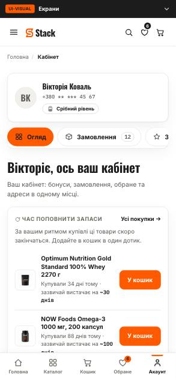
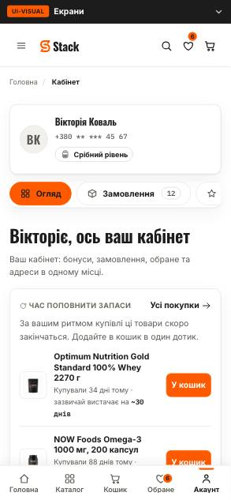
допісля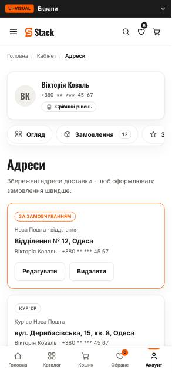
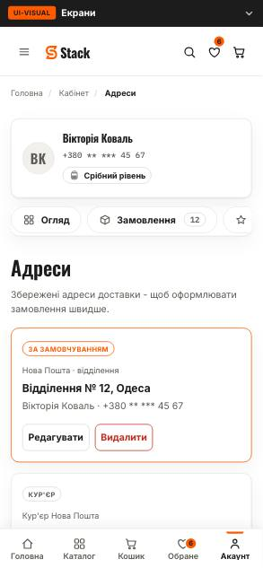
допісля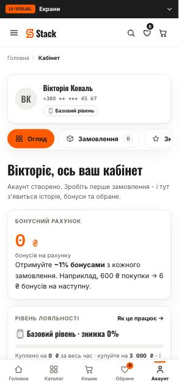
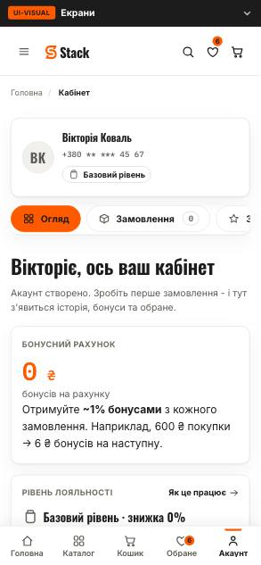
допісля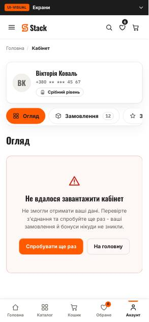
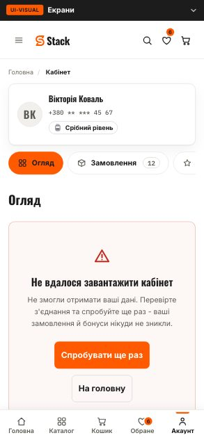
допісля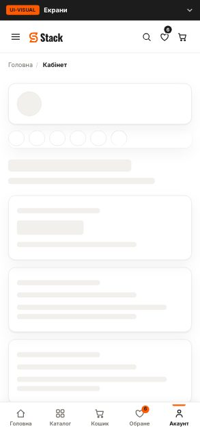
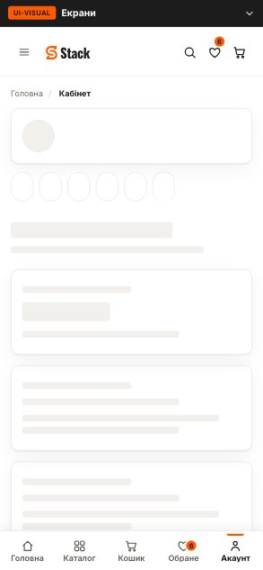
допісля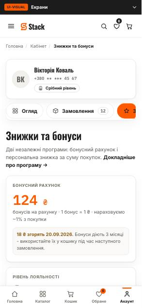
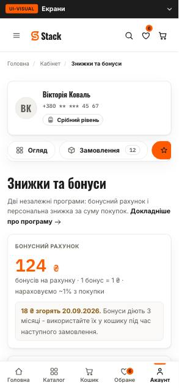
допісля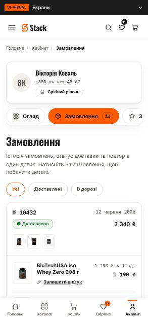
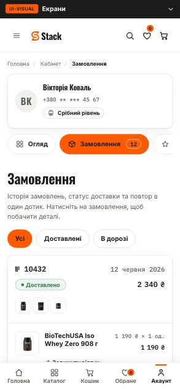
допісля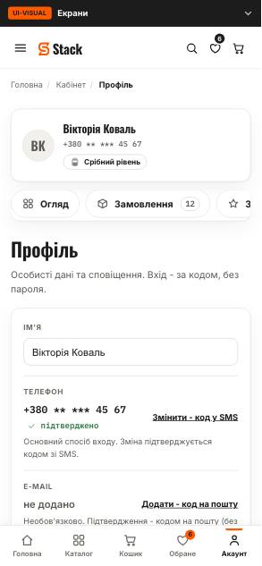
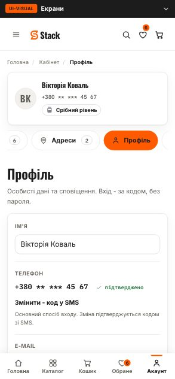
допісля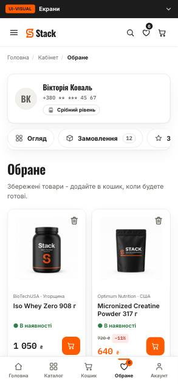
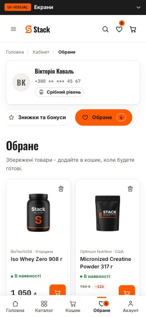
допісля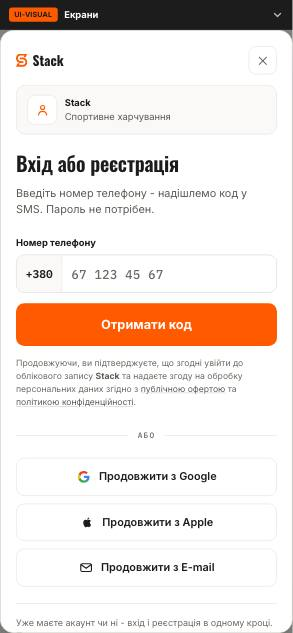
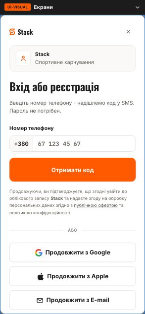
допісля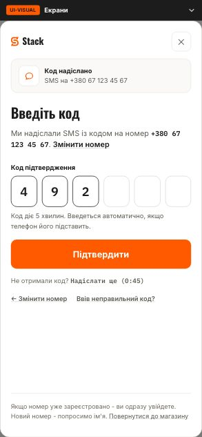
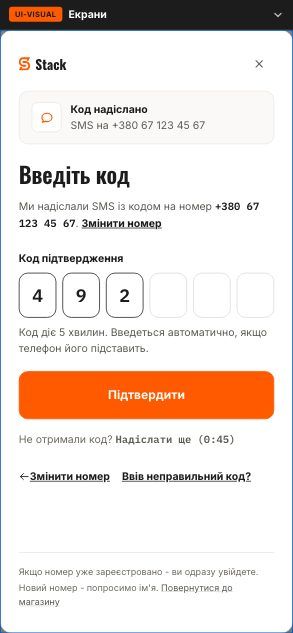
допісля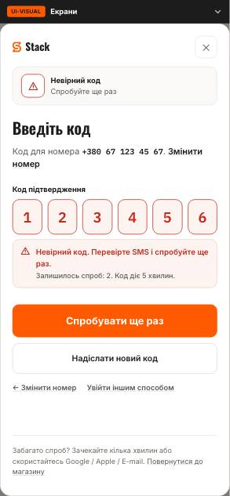
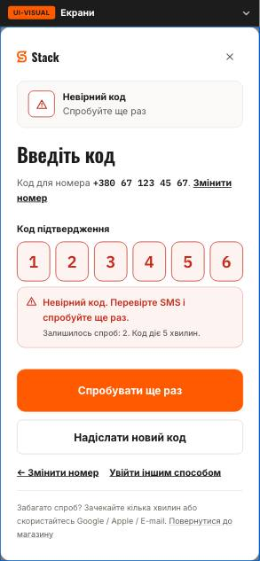
допісля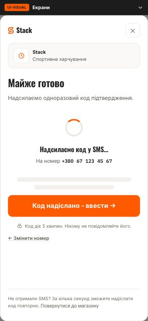
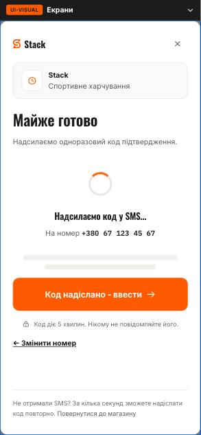
допісля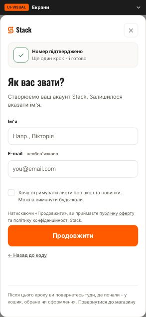
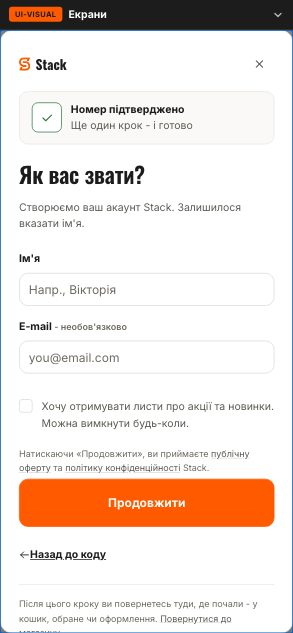
допісля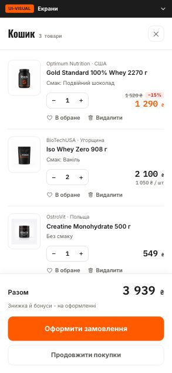
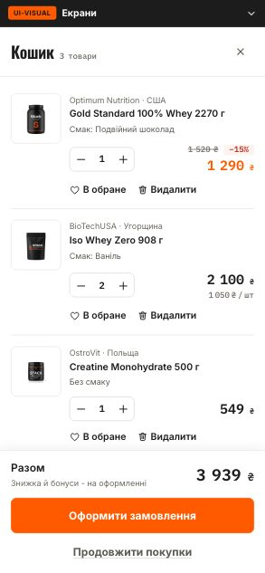
допісля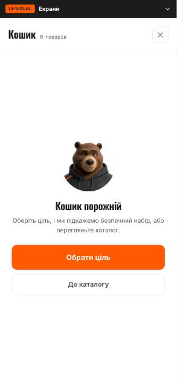
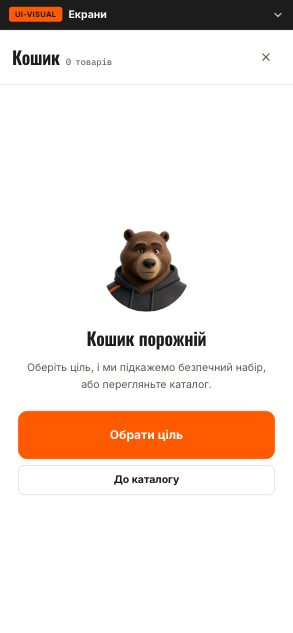
допісля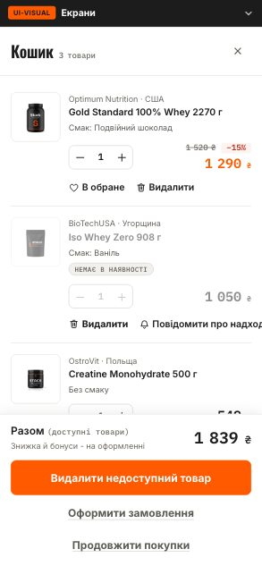
допісля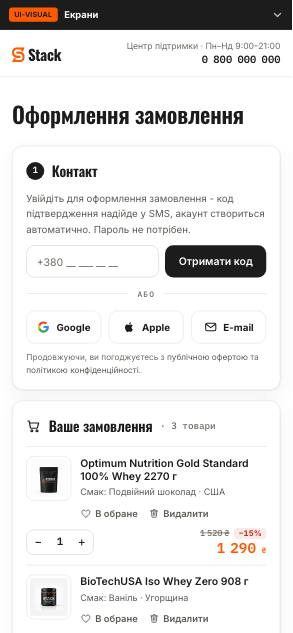
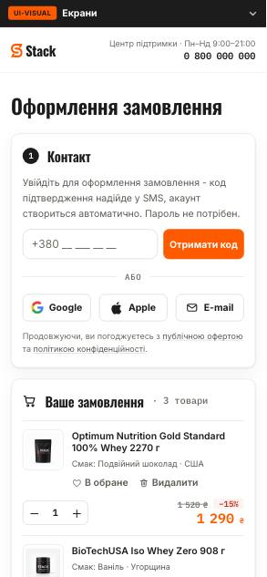
допісля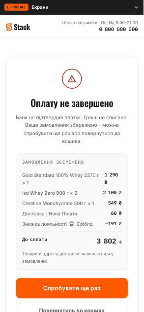
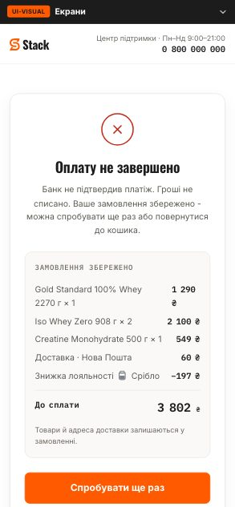
допісля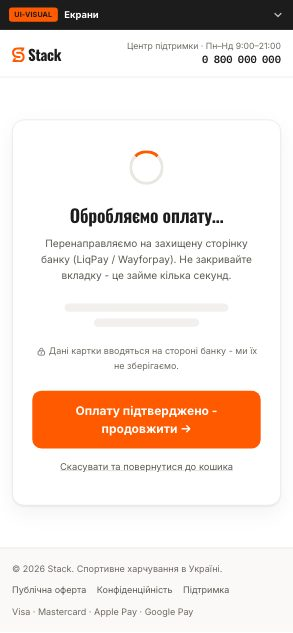
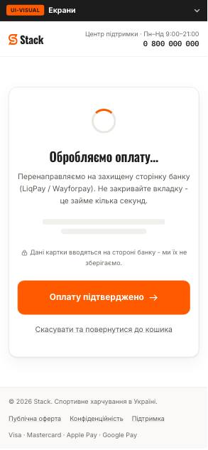
допісля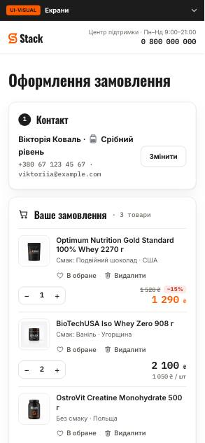
допісля
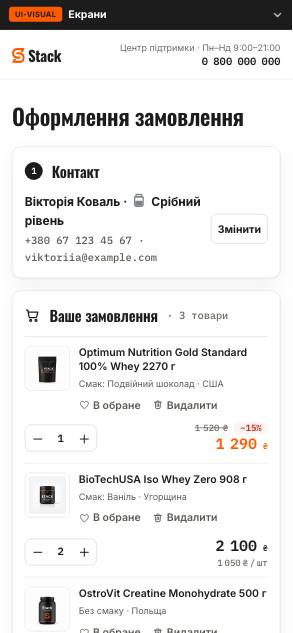
допісля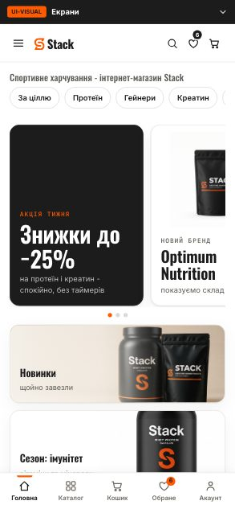
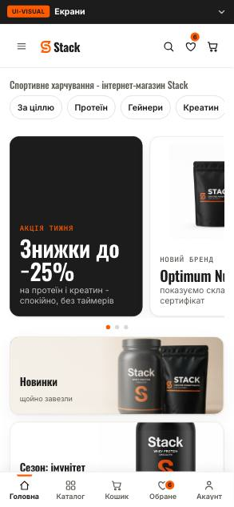
допісля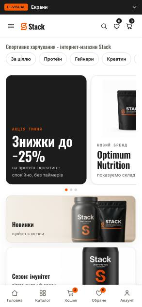
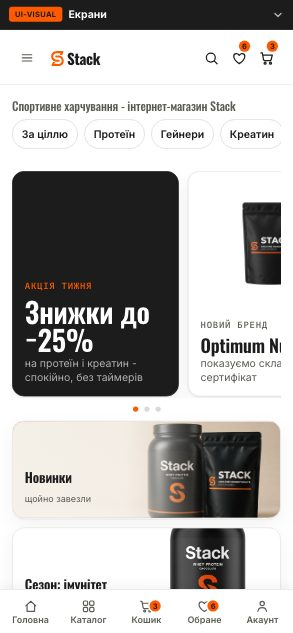
допісля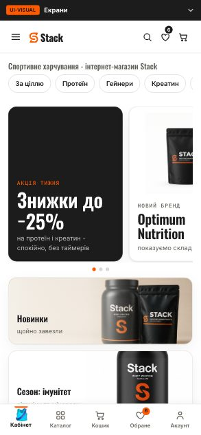
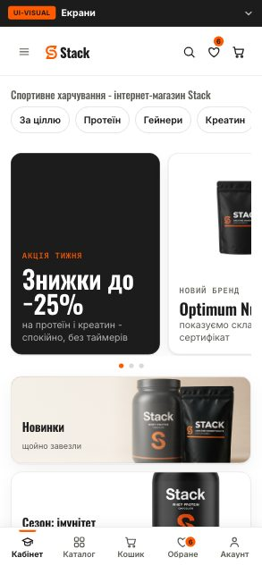
допісля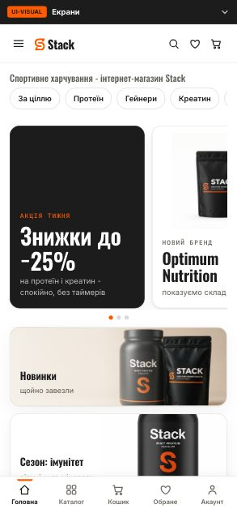
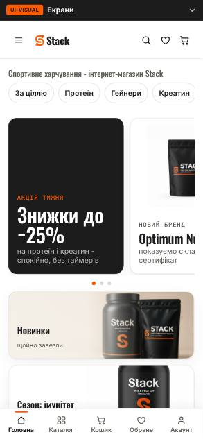
допісля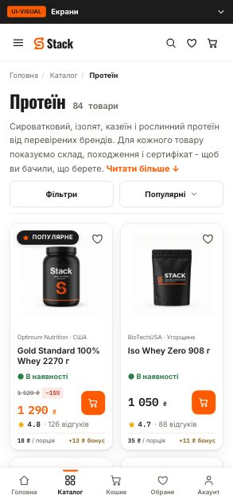
допісля допісля
допісляКожен рядок - крок, змінна, старе значення, нове значення й причина, прочитані з журналу етапу (design/kit/docs/consolidation.md, 9 700 рядків) і ні з чого більше. Де журнал числа не називає, стоїть [?] - не здогад.
165 рухів, з них 136 видно на екрані. Це і є відповідь на питання сторінки: продукт змінився не тому, що хтось перемалював його наново, а тому, що 136 разів було названо змінну, значення й причину.
| Крок | Що і яка змінна | Було → стало | Чому |
|---|---|---|---|
| 5.5 | Radius: thirteen steps to four (212 declarations rewritten, 9 878 radius declarations changed)border-radius / radius tokens | 13 radius tokens + 4 literals4 / 8 / 12 / 16 (+ pill, circle); ties down 10->8, 14->12, 6->4 | a list, not a system; ties go down because less rounding reads as a tool, more rounding reads as a toy (principle 4) |
| 5.5 | Icon stroke unified on three glyphs in design/_nav.js (457 stroke-width declarations changed)stroke-width | 1.5 and 1.71.9 | 1 931 glyphs were already at 1.9; one stroke at every size, below 14px the stroke compensates |
| 5.5 | Every text-entry field goes to 16px on mobile (176 font-size + 86 height declarations changed; 67 of 67 visible fields now >=16 at 360)font-size at max-width: 859px | 136 of 166 inputs below 16px--fs-16 | iOS Safari zooms the whole page when a focused field is under 16px |
| 5.5 | Four drifted card borders moved to the nearest declared role (27 border-colour declarations changed)border-color | --grey-dd x3, --grey-f0 x1--line-hair / --line-strong | two declared roles must carry every hairline; the census over-stated the drift by counting width as colour |
| 5.5 | The outlined action button takes the control edge (7 rules: .auth-x, .cd-x, .sbtn, .co-soc, .cd-cont, .cd-empty .btn, .co-err-acts .btn)border-color | --line-hair--line-strong | the line of a button is the edge of a control, and an edge is not a divider; verified 0 outlined buttons still on the hairline |
| 5.5 | Eleven duplicate colour primitives merged, 22 references repointed (primitives 49 -> 37)colour primitives (--red-100, --amber-25/75/100, --amber-300, --warm-150, --grey-f1/f2/f3/ee, --grey-cf) | eleven near-duplicate values, pairs inside dL 0-2--red-50, --amber-50, --amber-200, --warm-200, --grey-ec, --grey-cc | the primitive a semantic role reads survives; where neither has a role, the more-read survives |
| 5.5 | The price filter's number input (.frow .in.uiv-num, 14 instances) finally gets a sizefont-size | 13.3333px (the browser default)--fs-13 | the smallest size the system already declares for a field; going below would invent a step |
| 5.5 | Spacing put on an 8px grid: 937 declarations moved, 19 steps deleted; 16 921 of 47 244 elements touched (36%), 47 270 declarations changedpadding / gap / margin / height / width | 27 steps standing 1px apart from 1 to 182 · 4 · 8 · 12 · 16 · 24 · 32 · 40; ties UP (6->8, 10->12, 14->16, 20->24) | a ladder with 1px rungs forbids nothing; for spacing more room reads as calmer |
| 5.5 | The six half-pixel type steps snapped to whole numbers (210 declarations, 26 -> 20 steps; 16 396 elements, 32 833 declarations)font-size | 9.5 · 10.5 · 11.5 · 12.5 · 13.5 · 14.510 · 11 · 12 · 13 · 13 · 14 | a half pixel was typed by a hand, not asked for by a design, and on a non-retina screen it renders as blur |
| 5.6 | Font size scale 26 -> 9 rungs (39 995 of 47 244 elements touched, 85%; font-size 33 058 declarations)font-size | 20 steps, 12 neighbour pairs under a ratio of 1.0810 · 12 · 14 · 16 · 18 · 20 · 24 · 30 · 34; ties up (13->14, 11->12, 15->16, 17->18, 19->20, 22->24) | every neighbour must hold a ratio of at least 1.10; for text bigger is easier to read |
| 5.6 | Leading closed to three tokens (line-height 31 635 declarations recomputed)line-height / base rhythm | 6 tokens + 15 literals; body at 1.551 · 1.3 · 1.6; body at 1.6 | leadings 0.05 apart are not two decisions; the base move is made deliberately and out loud this time |
| 5.6 | Letter-spacing enters the system (1 831 declarations changed)letter-spacing | 117 literal letter-spacings in 16 values, no token at all--ls-display -.02em · --ls-lead -.01em · --ls-caps .04em · --ls-eyebrow .08em | tracking is never a free number: it compensates for size and for case, and there are only four cases here |
| 5.6 | Three glyphs redrawn - flame, drop, flask (584 svg elements changed: flame 296, flask 144, drop 144, zero others)glyph ink box / scale | flame 9.9 x 13.9 of ink, centre 3 modules high; drop 11.9 x 15.9, dy -1.00; flask neck 3 modulesflame 13.3 x 18.9, dy 0.00 (scaled 1.42 about the optical centre); drop scaled with it; flask neck 3.6, level line wall to wall | against a set median of 18.5 the flame read as a small mark floating over its own line; the flask's counters were closing up |
| 5.9 | The role layer gets the jobs it was missing: 20 primitives and 34 roles added, 154 sites in 45 files rewritten; 547 elements moved on 34 screens and only colour movedflat colour roles (--scrim-overlay, --mark-faint, --bg-skeleton, --text-price-was, --veil-*, soft status plates) | seven scrim values (.25 .36 .44 .46 .50 .52 .52), #BBBBBB in 21 places, #ECECEC in 13, #AAAAAA in 10, 9 rgba literals--scrim-overlay .52 and the named roles above | a component that has no role to read reads a value, and a component that reads a value cannot be re-themed |
| 6.0 | Depth becomes a ladder: 307 elements moved on 34 screens and every one moved only box-shadowbox-shadow | 97 declarations, 47 distinct values (one flyout at 12/30, 14/34, 16/36, 18/44 in four files)12 levels + 3 rings; 27 distinct values | a shadow answers exactly one question - how far off the surface is this thing - so the answer has to be a scale; a ring is not an elevation |
| 6.0 (atoms) | The Apple and Google marks are sized by INK, not by box (measured on auth, checkout and the showcase)--brand-ink / brand mark box | apple 13.0 of ink at 18px against google 15.8 at 19pxboth marks 16.0px of ink, in boxes of 19.2 and 22.2 | equal box is not equal size - a mark with more air in its viewBox has to be given a bigger box to carry the same ink; the buttons did not change height |
| 6.0 (atoms) | The phone field's grouping rule moves out of one screen's id into design/system/fields.js (four phone fields, exactly one of them grouped before)rendered value of a phone field | «4544534353» on the showcase, «32 423 42 34» on the auth screen«67 123 45 67» after a .cc cell, «+380 67 123 45 67» when the field holds the whole number | a rule attached to one id is not a component rule, it is that screen's private habit |
| 6.1 | The header's chevron on «Каталог» is removeddisplay | a rotating chevron beside the labeldisplay: none (rest #FF5A00, open #E85200) | the button already goes to the pressed fill while the mega menu is open, so the mark repeated a state the fill was already carrying |
| 6.1 | Квіз, Бонуси, Кошик, Увійти, Обране folded into one finish (four forms, 191 instances; header.css lost eight visual declarations)button finish | three finishes for five neighbours - Увійти had a ground, Квіз bare text, the two counters outlinesghost: nothing at rest, warm ground + accent ink under the cursor | the row has to say one thing at a time; Каталог stays the only loud thing |
| 6.2 | The footer's «Підписатись» joins the accent finish at size S (58 instances; the welded field followed the radius)height / border-radius / border-width / font-size | 37 tall, radius 4, 1px border, 12px type, no state at all41 tall, radius 8, 1.5px border, size S; :active reads --bg-action-pressed, :focus-visible a new --ring-focus-control | it was the only accent button in the product declared outside button.css; a pair in one row cannot round differently |
| 6.3 | The header's two counters get their border back (owner's call)border-color | transparent--line-strong | БОНУСИ and КОШИК carry a number, and a number needs an edge to sit in |
| 6.3 | The pager's border joins the outline finish (10 instances)border-width | 1px1.5px | the outline finish is 1.5px solid --line-strong, one label colour and one hover |
| 6.3 | Four outline forms stop being quieter than the rest (.wish 6, .btn.cd-cont 4, .btn.gh 2, .btn 1)color | --text-secondaryink | the label colour was secondary in five forms and nothing marked those five as quieter |
| 6.4 | The text finish takes one ink (.ci-lnk 22, .pf-dangerbtn 2)color | --text-secondaryink | colour and behaviour only: ink, accent under the cursor, a focus ring |
| 6.5 | The blocked checkout button stops holding a strong edge (.cd-blocked)border-color | --line-strong--line-hair | a control that is off does not hold a strong edge; disabled is a state on the attribute, not a variant on a class |
| 6.6 | The size ladder stops being a comment: 122 size declarations deleted from 20 component files, measured over 574 button instancespadding / font-size / min-height / border-radius | 25 heights, 13 paddings, 5 type sizes, 4 radii set by 75 rules in 23 filesS 8/12 · 14 · min 34 · r8 · M 12/16 · 16 · min 44 · r8 · L 16/24 · 18 · min 52 · r12; heights 25 -> 18, paddings 13 -> 4, radii 4 -> 3 | a button is small because of where it stands, not because someone typed a smaller padding that day; the radius follows the size |
| 6.6 | The checkout stops scrolling sideways at 360grid track / min-width | 11px of overflow, pushed to 51 by the size change (a 1fr track taking its floor from min-content)minmax(0, 1fr) plus min-width: 0 on the social pair and the welded field; 0 screens scroll sideways | the social sign-in pair could not shrink |
| 6.6 | `font: inherit` on .ob-collapse silently reset the ladder's typefont shorthand | font: inherit (type back to 16px)font-family only | the shorthand sets every font property, including the one the set had just decided |
| 6.7 | The button becomes one class: 56 names -> 22 API combinations, 44 distinct renderings -> 23, 314 look declarations removed from 24 files, 798 buttons carrying the APImin-height / padding / font-size / border-radius / border-width | «Каталог» 41.4px tall with a min-height: 34 that never fired; three weights 400/600/700; the accent family split between a 1.5px border and noneS 8/12 · 14 · 40 · r8 · M 12/16 · 16 · 52 · r8 · L 16/24 · 18 · 64 · r12; every boxed finish carries the same 1.5px border | five finishes laid over 56 bespoke names are five ways of being inconsistent; an equal 12px rung, and nothing moved more than 1.4px |
| 6.7 | The last two black buttons become accent (.co-getcode, .coach-newcta)background | --bg-inverse--bg-action | there is no black finish in the set; two «Отримати код» had two grounds |
| 6.7 | Every close becomes a ghost icon (.auth-x, .cd-x, the drawer and sheet closes)finish / mark size | an outline box on two of them, none on the others, two different greys; one ✕ at 16one quiet mark, warm ground on hover, ✕ ink 20 everywhere | a close is not the action of the screen it closes |
| 6.7 | The pager becomes a real icon buttonbox size | 34px box with a 1px border plus an ::after stretching it to a 44 targeta 40 box that IS the target | the icon finish owns the square, and a target drawn by a pseudo-element is not the control |
| 6.7 | L loses side padding below 480padding (horizontal) | 2416 (-8px) | giving the accent finish its border pushed «Підтвердити замовлення» onto a second line at 360; the type stays 18, the air does not |
| 6.7 | Dialog footers move from S to M (.pm-f, .fsheet-foot, all 31 .btn / .btn dark pairs in _nav.js)size class | SM | L is reserved for the one action of a whole SCREEN, which a dialog is not |
| 6.8 | A button never wraps: eight buttons were folding their label, four of those would then have spilledwhite-space | wrapping labelsnowrap; 0 buttons wrap, 0 overflow, 0 screens scroll sideways at 1280 and 360 | a label on two lines is not a long button, it is a button that does not fit where it was put |
| 6.8 | The phone step: below 480 every size gives back one step of side air and L drops to the M typefont-size / padding at <480 | L type 1816; height and vertical padding do not move | 18 is a desktop luxury and a label that has to be read is worth more than the air around it; the touch target is not negotiable |
| 6.8 | The out-of-stock buy row stacksrow layout | «Повідомити про надходження» sharing a row with a 54px heart - buy box 371px, page scrolling sideways by 42stacked; 0 sideways scroll | out of stock the action needs the whole 328px of a phone column |
| 6.8 | The header's two counters are left aligned and the star becomes the honey jar (owner's call)text-align / glyph | centred labels, a star markleft aligned from the button's left edge, an empty honey jar | two lines read as a column, and centred the button would shift as the number changes; the jar is the store's own reward shape and stands EMPTY because the header is a way in, not a rank |
| 6.9 | A mark beside a word gets one ladder (17 forms, 243 instances; 11 declarations deleted from five component files)icon ink beside a label | 15, 17, 18, 19 and 21 next to the SAME 14px label, decided by five component filesS 18 · M 20 · L 24, text finish 1.15em | the button decides, on the same ladder the icon-only button already used; a leading mark is a noun, a trailing sign is punctuation |
| 6.9 | The checkout's city chooser wears the set's S below 480size class at <480 | M (grew 5px of mark and stopped fitting a 247px phone column)S | a component may pick which size of the set it wears, it may not invent one |
| 6.10 | Six real screens were rendering type at the size they inherited because the token did not exist (.auth-consent, .auth-sub, .bb .simple, .cd-oosnote, .cedlg p, .fullcomp)font-size | --fs-11-5, --fs-12-5 x2, --fs-13-5, --fs-14-5 x2 - all invalid, so the declaration dropped and the text inherited (up to 4.5px larger)11.5 -> 12, 12.5 -> 12, 13.5 -> 14, 14.5 -> 14 | an invalid value in CSS does not fall back to something near it, it drops the whole declaration; the scale has no half rungs |
| 6.10 | The header stopped jumping when a number arrived (68 counter instances across 39 screens)min-width | 96px, which sat below all four measured states (124 / 98.6 / 100 / 103)124 - the widest EMPTY state; all four states now measure exactly 124 | empty is the state whose width is fixed by copy rather than by data, so it is the only one that can set a floor |
| 6.11 | The quiz invitation block was never a row (.goalcta on four home screens)display / gap / margin-top | display: block, no gap, no margin (the «gap» was a space character)flex, gap 12, margin-top 16 | the class exists only in wireframes/_wf.css and was never carried into design/system at the step-3 split |
| 6.11 | The quiz hint takes a size of its own (.goalcta .hint)font-size / color | 16 / near-black (inherited body)14 / --text-secondary | .lintro, the supporting line 20px above it in the same block, is 14 secondary; two supporting lines at two sizes is noise |
| 6.11 | «+ ще 11 брендів» stops shouting (.fmore, 14 places across the listing screens)font-size / color / margin-top | 16 / near-black12 / --text-secondary / margin-top 8 | it was rendering louder than the 14px options it extends; secondary and not tertiary, because tertiary is what an OFF control wears |
| 6.11 | The quiz button steps down a size on all four home screenssize class / height / label | L - 64 tall, label 18M - 52 tall, label 16 | L is «the single action of the screen»; here that action is the six tiles and the quiz is the alternative |
| 7 | The field becomes an atom: 89 fields onto the API, 57 look declarations removed from six component filesfont-family / height / border / radius / font-size | 66 of 101 fields set in Arial with pure #000 ink; nine heights (37·40·44·45·46·47·60·61·64); borders in three widths, radii in three, type in five sizes including a 15 that is not a rungheights 40 · 44 · 60 (OTP) · 80 (textarea) and nothing else; fonts Inter (74) and IBM Plex Mono (27), no Arial; ink one value | a field does not inherit font-family and three files of fourteen told it; two rungs and no third, because nothing in the product occupies one |
| 7 | The notify row's field comes back onto a rungalign-items / height | stretch, making the field 64 - a height no rung of the set has, borrowed from whatever stood beside italign-items: center | a field that gives up its own box takes the row's height instead of its own |
| 7.1 | The select's caret becomes ours (one <select> in the product, the coach's client picker)appearance / background-image | appearance: auto - the browser's own caret, off the ink ladder and drawn differently on every platformappearance: none, 40px of room on the right (12 padding + 20 mark + 8 gap), the icons.js chevron M6 9.5l6 6 6-6 at 1.9 round, ink frozen in --field-caret | on product-coach it stood 150px above OUR caret on the city chooser: two «choose something» controls with two different marks on one screen |
| 7.2 | The choice menu becomes one atom for the select and the five menu triggers; sorting at 360 becomes possible at alltrigger height | the picker's trigger wore a button's padding (12/16), making the box 48 where the field ladder says 44; the mobile «Популярні ▾» opened nothing44, 16px, medium weight - a menu built FROM a field keeps the FIELD's rung; 15 menus built, every list a listbox | the sort control answered the mouse and nothing else - no keyboard, no Escape, no focus return, and on a phone it did not exist |
| 7.3 | The PDP wishlist heart takes the size its class already claimed (.bb .wish)box size | 50 in the structure block and 54 in the colour block, while the element's class says 52the component declares no box at all; the heart measures 52 | the two concatenated blocks meant one selector was written twice in one file and the first never rendered |
| 7.3 | A brand mark was setting a button's height on auth.htmlflex box on .uiv-brand / vertical-align | «Продовжити з Google» 55.8 and «Продовжити з Apple» 59.6 - two identical controls 3.8px apart, both over the M rungall three buttons measure 52 | each mark oversizes its own svg to keep the INK equal, so the svg was the tallest thing in the button |
| 7.5 | The trailing arrow stops being a typed character (34 signs)glyph / font-size of the trailing mark | «→» U+2192 typed into the label, read aloud as «стрілка вправо»; 8 trailing marksarrowRight drawn from icons.js with aria-hidden; 48 trailing marks, each at 1.15em of its own label (14 -> 16.1, 16 -> 18.4, 18 -> 20.7) | the character is part of the LABEL and a screen reader says it out loud; a mark with aria-hidden is silent, which is what a decoration owes |
| 7.5 | The city chooser's caret stops being drawn twice (.dpcar deleted)caret drawing | a typographic ▾ shrunk to 10pxthe set's chevron | the caret is no longer drawn twice |
| 7.6 | The underline comes off the four profile actions (btn--inline removed)text-decoration | underlinenone; ink stays rgb(28,28,28) at rest, hover still accent rgb(255,90,0) | not one of the four is inside a sentence, so the underline was decoration the system's own rule does not ask for |
| 7.6 | The arrow is addressed at the control, not at the button - the 20 signs left on links become marksselector address / font-size / margin-left | [class*="btn--"], so mega-menu column heads, «Докладніше про програму →», «Усі покупки →», «Як це працює →» and the accordion ▾ kept their charactersa, button, summary, [role="button"]; 120 visible trailing marks at 1280 and 68 at 360, every one at exactly 1.15em; the mark takes margin-left: --space-4 | punctuation cannot be one size on a button and another on a link; a link is not a flex row, so on the mega-menu head the arrow landed flush against the last letter |
| 7.8 | The header row unifies on 44 (136 controls across all 34 pages that have a header)height | .wfh-actions .wfh-act height: --size-46; the search shell at 40 and its input and .go at 3744 on the actions, 44 on the search shell, 41 on its input and .go; the header 114.2 -> 112.2 and each page 2px shorter | --size-46 held no other control anywhere; 44 is the finger minimum that btn--icon, field.css and menu.css all stand on |
| 7.10 | «Читати більше ↓» joins the button set on four listing pagesdisplay / text-decoration | display: inline, no underline (17px tall)inline-flex (22.4 tall, baseline unmoved), text-decoration: underline | an action written as words INSIDE a sentence is exactly what btn--text btn--inline is declared for, and this is the only true --inline in the shop |
| 7.11 | Six more typed signs become drawn marks (close, plus, minus, arrowDown added to icons.js)glyph | ＋ U+FF0B x408 on 34 pages, ✕ U+2715 x100, − / + x32, ★ U+2605 x15, ↓ U+2193 x4, ▦ ☰ x2drawn on the set's anatomy (viewBox 24, ink inside 2..22, stroke 1.9); 0 signs left on any control | a census of a set you defined cannot find what is outside it - the earlier checks only looked for → ▾ ⌄ › |
| 7.16 | The brand-ink rule had been inert since it was written - all four brand marks drew at the same sizeflex (on .uiv-brand svg) | auth.html google / apple both 20; checkout.html both 18auth 24 / 27.8; checkout 21.6 / 25; button heights unchanged at 52 and 40 | the svg is a flex item and a flex item shrinks by default - `overflow: visible` gave it permission to be painted outside the box, never to BE bigger; that is `flex: none` |
| 7.16 | The footer's messenger marks stop being sized past the component--brand-ink / svg width | footer.css set svg{ width:16px } while the box stayed at 1.05em = 14.7--brand-ink: 16px; box and drawing both 16, and the row did not move | the caller says how much INK, icon.css does the sum |
| 7.17 | The stacked header action gets its own rhythm (.wfh-act.stack)gap / glyph size / air | glyph 18 · gap 8 · label 12, air above 1.2 and below 1.2glyph 20 · gap 2 · label 12, air 5 above and 5 below; box still 44 | the gap inside the control was six times the air around it, so grouping read backwards; the 44 is not negotiable, so the air comes out of the gap |
| 7.17 | «Кабінет ▾» gets its air backcaret font-size | 1.15em - 13.8px in a 12px line, leaving 1px of air where «Увійти» had 5the caption's own size; measured 4.6 / 5 / 5 across the three, all boxes 44 | a trailing mark is right in a line of text and wrong in a budgeted caption |
| 7.18 | The stacked action turns out to be one atom written twice (header .wfh-act.stack and tab bar .wf-tab)glyph size / caption ink / caption line-height | tab bar glyph 21 (1.05em on a 20px emoji), caption --text-muted, leading 19.2 inheritedglyph 20 (a rung of the set), caption --text-secondary, flat leading | a caption under a mark is one line by definition, and a mark that leads cannot be the faintest thing in its own control |
| 7.20 | Under the cursor, the caption now moves with its mark (.btn--stack:hover .lbl, .tl)color on hover | mark #1C1C1C -> #FF5A00 while the caption stayed #5B5B54color: inherit - caption #5B5B54 -> #FF5A00, plus its own transition: color .15s; no box moved by a pixel | a caption under a mark is part of the control's NAME, and a name cannot stay behind while the thing it names lights up |
| 7.21 | The mobile catalogue overlay stops wearing the cart row's grid (`.ci` scoped to `article.ci`)display / padding / border-bottom / column width | .ci box 24 wide and 52 tall, child stretched to the 74px column, mark overlapping its label by -10px, 13 stray dashes, row height 85, 9 rows on a screen24 x 29, drawing at its own left, mark -> label +15px, 0 dashes, row height 62, 13 rows on a screen | one name, two meanings - a cart row is an <article> in all 14 places and a mark is a <span>, so the markup already says which is which in both layers |
| 7.21b | The same scope applied to the frozen grey twin (wireframes/_wf.css:1626), on the owner's worddisplay / padding / border-bottom | .ci 24 x 61, grid, 16px 0 padding, 1px hairline, mark -> label -9 overlapping, 13 dashes, row 9024 x 28, block, 0 padding, no border, mark -> label +16, 0 dashes, row 57 | the design system could not be right about .ci while the prototype it was split from was wrong about it |
| 7.23 | The chip's four selected editions come to one, chosen on contrast (owner's call)background / color on .on | .ptab.on accent fill + white label (3.13:1), .ord-tab.on white ground + accent edge and label (3.13:1), .cegoals button.on ink fill + white label (15.9:1)accent fill + INK label (5.45:1), the .acc-link edition - the largest family and the only accent edition that passes AA | same control, same job - press a word to choose - and six files each grown their own edition |
| 7.23 | The order filter joins the chip family and the 96-instance drawer chip gets a hover for the first timeborder-width / color / hover | .ord-tab 1px edge, resting ink --text-secondary, 40 tall; .dr-chip no hover at all1.5 edge (41 tall), resting ink --text-body; one hover edition - edge and word to #FF5A00 | a choice not yet made is not muted; four hover editions were four files disagreeing |
| 7.24 | Three marks in the account rail had been drawn at 0x0 (42 hits on all seven account pages)svg width / height | 0 - `.acc-link .ic .uiv-ic svg{width:18px}` reached THROUGH a wrapper the sign-only shape does not create, so the svg fell back to 1.05em against a font-size of 0`.acc-link .ic svg{ width:18px; height:18px }` - all eight rows read 18x18 | a component that fixes an icon's size must size the DRAWING, not a wrapper somebody else may or may not create |
| 7.25 | The mega menu stops overflowing the page in the narrow bandcontaining block / max-width / grid track | hung off the .wfh-cat button with max-width: 94vw measured against the viewport and a grid floor of 226 + 420 + 196 = 842; at a 900 window its right edge stood at 1155 against a page 885 wide - 255px unreachable.wfh-cat static, .wfh-main the containing block, left/right 16, max-width 940, minmax(0, 1fr); 813 wide at an 845 canvas, 0 sideways scroll at 77 checks | the product switches layouts on @media, which reads the VIEWPORT, while the product lives in a canvas that may be narrower; a floor no max-width can get under turns «narrow the panel» into «overflow the page» |
| 7.26 | Four files were holding a fifth file's number - measured at a 1000 viewport--shell-top / --shell-left (was literal 216 / 40 / 899 / 900) | auth.html .auth-ov left 216, top 0; cart.html .cart-drawer top 0 under the bar; checkout.html body padding 216 / 0left 0, top 40; drawer top 40; body padding 0 / 40 - the tokens flip at exactly 1076 | step 7.25 moved the shell to 1076 and every copy stayed at 899; the rule stays in the component, the number does not |
| 7.26 | The chevron on the catalogue overlay's rows takes the role that names it (3 rows, two go one step darker)--mark-faint | #cbcbcb (a raw literal in a system file, while the third row asked for var(--grey-bb))#BBBBBB | the file contradicted itself and the semantic token already exists for exactly this job - «the quiet mark: a chevron on a row»; declared as this step's one visible change |
| 7.27 | The trust banner's star joins the one rating rule (4 instances, one banner)star size | 14 in a 14px row15 - calc(1em + 1px) | the same row size at which the buy box and the review row both drew 15; a star's ink does not fill its box the way a digit fills its own |
| 7.27 | The checkout's bonus star, the last ★ on the site painted by the font (2 instances)glyph | typed ★drawn from the set | marks.js walks CONTROLS and this is a span in a div; the three uivStarify calls are named after ratings and a bonus is not a rating |
| 7.27 | The review modal's star picker (15 instances on 3 screens)star fill | outline, and pressing one turned it into a gold outlinefilled | icons.js already states the rule - one drawing, two finishes: outline for a nav chip, filled for a rating; that path was not following it |
| 7.28 | The skeleton bar becomes one height and two widths stop disagreeing (6 bars + 2)height / width % | .co-skel .sl and .auth-skel .sl 11px, .acc-subsk 12px; .co-skel .sl.s 46%; .auth-skel .sl.m 70%10px on all of them; 50%; 72% - and the checkout and auth columns came down 2px each | a skeleton bar is not the height of the text, it is a mark saying «a line goes here», and two files disagreeing by two percent about the same grey rectangle is not a decision anybody made |
| 7.28 | The pulse can be stopped@media (prefers-reduced-motion: reduce) | missing - the one component on the site whose whole job is to moveshape stays, breathing stops, opacity settles at .78 mid-cycle | a loading hint must not be the thing that makes somebody ill |
| 7.29 | The language picker joins the radio's row rung (.pf-lang, 2 instances in the coach's client dialog)padding / border-color / background | padding 16/16, resting edge --line-strong, chosen edge --line-inverse on --bg-sunken, circle 20x20padding 12/16, resting edge --line-hair, chosen edge/ground/circle on the accent | two families of three already said the accent, and the design principle says the accent is the single action colour |
| 7.30 | The login dialog's link row moves to the loud rung (.linkrow a, 6 instances)font-weight / color / text-decoration-color | 600, --text-secondary, underline in --line-strong700, --text-body, underline in ink | 700 on ink is what makes the loud rung legible AS a control at 12px; it was one file disagreeing with the site, not two disagreements |
| 7.30 | «Змінити номер» joins it (.auth-sub a, 2 instances)font-weight / text-decoration-color / cursor | 600, underline in --line-strong, cursor: auto700, underline in ink, cursor: pointer | same rung, and a link that answers a click has to say so |
| 7.30 | The footer's legal row - the most repeated link on the site (87 instances, drawn by an inline style typed into a render function)color / text-decoration-color | --text-muted, underline in its own colour--text-secondary, underline in --line-strong (the quiet rung) | the rule lived in an attribute no stylesheet could reach; the wrapper gained class="wff-legal" |
| 7.30 | Two checkout link families gain the underline they were only colouring (.co-consent a 2, .co-foot-links a 24)text-decoration | text-decoration-color set and NO text-decoration - the colour of an underline that did not existthe quiet rung's underline | not planned; the A/B found it, and both do a job the site already underlines elsewhere |
| 7.30 | Four home screens carried an inline style="color:#111" that two !important were beatingcolor | #111 on 8 links and 32 icon marks inheriting it#1C1C1C (--strong), with the grey rule given to _wf.css | an !important is a note that something upstream is wrong; deleting the note without reading it puts the bug back |
| 7.32 | The view toggle's chosen and hovered cells (14 chosen, 8 reachable)color | chosen cell's ink white (--text-oninverse on a 10% tint); hovered cell's glyph grey - a hover on 13 screens that changed nothing you could see--text-action on both | .vtoggle span matched every span inside the box including the icon's own wrapper, so two patch rules existed to take the cell's paint back off it; `>` says what was meant |
| 7.33 | The tab bar's five tabs get a corner (340 rows: 5 tabs x 34 screens x 2 viewports)border-radius | 08px | the control touched more than any other in this product returned the identical computed style at rest, hovered and pressed |
| 7.33 | The burger drawer's shadow takes the token that describes its job (68 rows)box-shadow | 0 16px 34px / .13--elevation-3 (0 14px 34px / .12) | the drift 7.26 measured and left, because that step already carried a visible change |
| 7.33 | 3 351 controls that a finger touches gain a press state (chip 503, icon-text button 92, checkbox 176, stack-action 238, radio 38, stepper 15, view toggle 8):active background | no answer - :active appeared 5 times across 2 files, one of them a reset--bg-action-soft (#FFF9F5), or --bg-action-pressed (#E85200) where the ground is already accent; verified by real touchscreen.tap() | on a mobile-first product the feedback layer had been written for the secondary device; both grounds have been in tokens.css since 5.5, named for this job |
| 7.35 | The availability dot stops being typed 107 times (212 rows: `TXT: ● X -> X` on all six families)the dot's footprint (glyph advance + space -> box + gap) | 14.25px (Inter's ● at 5.16px of ink on the 12px rung, 6.02 at 14px, plus a 2.84 space)10px - a 6px drawn dot in currentColor with --space-4; .oh-status width -4.4px, .aord-status -4.4px, .oh-thumbs shifts 4.36px | a screen reader says «black circle В наявності», the glyph has no size of its own, and nothing can tell it from the word |
| 7.35 | The PDP's availability line kept a font-family the atom now declares (.bbavail)font-family | 'Inter', sans-serif written in buy-box.css - dropped in the move, which put the line in monospace and 8.5px wider--font-body on the atom; width -1.8px against HEAD | it sits inside .bbmeta, which is monospace; the token carries the system fallbacks the literal did not |
| 7.36 | The live price takes one weight at 20px (.ci-sum, .li-sum, .tnew, .mbp b - 20 elements)font-weight | 700800 | the live price had two weights at one size - 800 on 99 elements, 700 on 20 - and nobody chose the split |
| 7.36 | The struck price takes one weight (.ci-old, .li-old, .told, .mold - 10 elements)font-weight | 500 and 600400 (--fw-regular, added to tokens.css) | the struck price had three weights and nobody chose the split: .told inherited the 600 that .tprice declares for its block |
| 7.36 | The ₴ kerning moves from the container to the figure, and reaches the list card at all (13 + 9 elements)word-spacing / letter-spacing on the figure | -.24em declared on .tprice (16px) resolving to -3.84px and inherited by a 12px struck price and a 20px live one alike; the list card had nonecomputed on the figure; .lprice and .lold gain it | product-card.css:72 lists .pcard and not .pcard-l |
| 7.36 | The currency mark follows its parent (.uiv-cur, 54 elements)font-weight | its own weightinherit | the mark is .55em of the price beside it and has to be the same voice |
| 7.36b | The discount chip takes the mono face DESIGN-artifacts.md gives every price figure (13 chips + 2 put back)font-family | Inter on .lcut, .hd-cut, .cut, .ci-cut, .li-cut (and .tcut, regressed to Inter by 7.36)--font-mono | the cut carries a figure; the tier variant carries a word («гурт») and takes --font-body instead |
| 7.36b | The chip stops having four heights (35 chips) and three other axes foldline-height / font-weight / padding / letter-spacing | line-heights 16, 19.2, 15.6 and 12; .cut at 800; .tcut padded 2/4; .mcut tracking -.01em--lh-flat everywhere, 700, 2/8, no tracking; the 12px chip goes 49x23 -> 45x16 and the 10px one 43x20 -> 40x14, so a cart row is 190 -> 186 | a chip's height is its line-height plus its padding, and nobody chose any of the four but the last: 1.6 is the page's body leading inherited by a chip that never asked |
| 7.37 | The counter beside a filter option takes the family the other 350 have (.flink .ct, 96 rows)font-family | Inter--font-mono | a count two pixels from 350 identical counts, and the only one in the body face - chip.css gave it a size and a colour and no family |
| 7.37 | The product card's badges come down a line (52 rows)line-height | 1613 (--lh-snug) | .tag alone is not a badge; the file now names .tag.tag-pop, .tag.tag-new and stops carrying a dead white edition |
| 7.37 | The status pills come onto two rungs (.oh-status 8 rows, .aord-status 2, .ci-oostag 2, .rbadge 14)line-height / padding / background | .oh-status line-height 19.2; .aord-status padding 2/8; .ci-oostag padding 4/12; .rbadge filled with --bg-success and bordered with --line-success-soft15.6; 4/12; 2/8; one green - --bg-success-soft, whose own comment reads «the fill of the success pill» | 12px is the pill of a row that is mostly about the status, 10px rides inside something else; two greys under a percent of luminance apart survived because nobody could see them |
| 7.37 | The list card's badge takes the family's shape (4 rows)border-radius | 4--radius-pill | the list card carried a dead white-with-a-hairline edition that started rendering the moment the atom took over, caught by the A/B |
| 7.40 | A leading that step 5.6 had deleted was hiding inside a `font:` shorthand (.coachbox .cbnote)line-height | 1.55 - 20.15px1.6 - 20.8px; .coachbox grows 1.95px at 390 and 1.3px at 1280 | inside `font:` a leading is a slash and a number, not a property, so the 5.6 sweep could not see it |
| 7.42 | The cart counter badge had three renderings of one number; the face is keyed on the class (38 rows)background / color / box | phone icon row --bg-inverse with a white label; desktop stacked action --bg-action with ink; on the number button neither parent matched, so it rendered as a bare 9x18 run of textone accent pill: ground #1C1C1C -> #FF5A00, label #FFFFFF -> #1C1C1C, 15x15 everywhere | both editions carried the same «6» at the same moment and the width of the screen decided which one a person saw; .wfh measures #FFFFFF, so the ink edition was a dark mark on a light bar |
| 7.42 | The stacked action's hover rule was never in the cascade - one stray comment closer deletedcolor on hover (.btn--stack:hover .lbl, .tl) | twelve rule bodies on disk, eleven in the CSSOM - the caption of every stacked action, on the header's two buttons and the phone's five tab captions across 34 screens, did not answer the cursorthe rule parses and wins at (0,3,0) | a comment closed itself four lines early and the parser swallowed the selector of the next rule; all 78 stylesheets now balance |
| 7.42 | The list card's heart gets the hover the grid card's has (.pcard-l .lfav)color on hover | no hover - product-card.css:69 pins .pcard-l .lfav:not(.on) at (0,3,0), which beats .btn--text:hover at (0,2,0)`.pcard-l .lfav:not(.on):hover` at (0,4,0), which wins | button.css states the quiet ink and its hover on two adjacent lines; this surface carried the first and not the second |
| 7.43 | The list card answers the cursor with the same sentence the grid card does (7 cards x 3 widths)border-color and color on hover, transition-property | edge --line-strong, title nothing at all - `.pcard-l .nm` matched ZERO elements because a list card's title is `.lnm`edge --line-action, title --text-action, transition-property: color | the largest word in a list row - the thing a finger aims at - did not answer the cursor; the edge is the card's own «this one» and the system has exactly one colour for that |
| 7.44 | The product card's lift joins the nine other surfacestransform: translateY on hover | -3px on .pcard alone-2px, which .hpromo, .hdeal, .tbn, .blogcard, .certthumb, .gthumb, .gtile, .hvert and .tsx .uiv-ic all already used | nine against one is not a decision about cards, it is the sweep that never happened |
| 7.45 | A product that cannot be bought fades by one value (.ci.oos - photograph, name and price, 3 rows x 3 widths)opacity | .45.5 | one meaning on one kind of surface, two values in two files; two readers against one, and nothing distinguishes a dimmed row from a dimmed card |
| 7.47 | A phone media block stood above the rules it had to beat, so the trust strip's icon drew its desktop size on a phone (1645 declaration-level diffs on three product screens at 360)icon box / glyph / column / tile and strip height | icon box 44x44, glyph 23x23, text column 230px, tile 68px, strip 290px38x38, 20x20, 236px, 66.38px, 283.5px; 570 elements below the strip move up by exactly 6.5px | `.tsx .uiv-ic` here and there are both (0,2,0) and the later one takes it - the later one was the 44px desktop box; the six pixels the icon gave up went to the label |
| 7.47 | The counter on the cart shelf's mark takes the ink the locked rule gives a marker (10 rows each at three widths)color on --bg-action | --text-oninverse, white on #FF5A00 - 3.13:1ink - 5.45:1 | DESIGN-artifacts.md says a label on an orange fill is white, and directly under it that small orange things which are NOT buttons keep the ink label; this is a counter on a marker at 10px, and it was the only exception of 18 selectors |
| 7.48 | The bonus ledger's «Баланс» column could not be reached on a phoneoverflow-x / position | overflow: hidden on a 328px wrapper holding a 411px table - 3px of the 87px column visible at 360 and no way to scroll to itoverflow-x: auto (scrollbar suppressed, overflow-y pinned to hidden); a real touch gesture reaches scrollLeft 85 and shows all 87; .led-head and .led-note go position: sticky; left: 0 so the title stays at +1 instead of travelling to -68 | the alternative is that the buyer cannot see their own bonus balance on the device the store is built for first |
| 7.48 | The base loyalty tier stayed a raw colour emoji on the screen a buyer sees before their first order`if(UIV_TIER_EMOJI[part])` -> `if(part in UIV_TIER_EMOJI)` | 3 raw emoji on account-empty.html, 0 instances of .uiv-tier.t00 raw, 3 marks; the page grows 3.39px at 390 and is identical to the pixel at 1280 | the map sends the base tier to 0, which is falsy in JavaScript |
| 7.51 | On the order's «Разом» row the label was heavier than the sum (4 figures x 4 widths = 16 rows)font-weight | 600 on the figure while .sr.total span gave both halves --fw-black800 - the pull-back declaration deleted | the row exists to state the sum; the pull-back at (0,3,1) was drawing the wrong thing |
| 7.54 | The out-of-stock note inside an order had its margin upside down (.ord-oos, 4 rows)margin | var(--space-16) 0 var(--space-2) - 33px of air above, 2px below0 0 var(--space-16) - 17px above, 16px below | the note is the FIRST child of .ord-body, which already pays 16 on every side, and two pixels glued it to the first product line, which is not what it is about |
| 7.59 | The address dialog's delete button takes the outline finish by class (3 buttons in three dialogs)padding (horizontal) / min-height | a bare <button> with no class, drawn by hand in nine declarations here and eleven in _wf.css; side padding 16 at every width; 178x40 at 1280class="btn--outline btn--s btn": padding 12, and 8 below 480; 170x40 at 1280 - 8px narrower at 1280, 16px at 360 | the button now shrinks on a phone with every other button, which the hand-made edition could not do - it had no media query; the grey prototype measured 166x40 before and after |
| 7.60 | F1 - an inline style on design/account-empty.html:81padding | style="padding:20px 14px" (on no scale in the system, outranking every stylesheet)the component's own --space-24 / --space-16; the page 2022.02 -> 2030.02, exactly +8.00px | an inline style outranks every stylesheet by specificity and neither 20 nor 14 is on any scale |
| 7.60 | F2 - .rk-item:first-of-type in restock-note.css matched nothingselector / padding-top | :first-of-type - «first among siblings of its TAG», and the first DIV in the card is .ah, the header.rk-lead + .rk-item; the first restock row tightens by 10px at the top and account.html goes 2389.25 -> 2379.25, exactly -10.00 | the neighbouring :last-child proves the symmetry was intended |
| 7.61 | The button that ends a thing wore the paint of the button that buys one - .btn--danger (9 instances on two screens, 8 elements changed)color / border-color / background-color | three confirmations as btn--accent (white on orange); three card deletes as plain btn--outline, identical to «Редагувати» beside them; the account-deletion opener red on hover onlybtn--outline btn--danger - ink #C42B1C, edge #C42B1C, ground transparent; hover --bg-danger-soft, active --bg-danger; the text opener red at rest | the loudest object the system owns was the one that ENDS a thing; not a red FILL, because DESIGN-artifacts.md bans red splashes. Six properties, zero geometry - the box stayed 140x52 |
| 7.63 | The eyebrow becomes one face - nine declarations moved (1412 rows on 34 of 40 screens, no RECT and no POS)color / font-weight / letter-spacing | .wff-col h4 --text-primary rgb(28,28,28) (580 instances); .dr-lbl, .city-lbl, .acard .ah h3 --text-secondary rgb(91,91,84) (708); .ctable th, .pl-t th, .dl .dk, .bb .vlbl, .clientpick label at bold (152 rows 700->800, 12 rows 600->800); .pm-rw on .08em--text-muted rgb(110,106,98); --fw-black; .pm-rw on --ls-caps .04em (12 rows) | every eyebrow labels something set at 14px or more in a darker ink, and the footer heading was the only one as dark as the content beneath it; the two tracking tokens are now two voices, .04em Inter and .08em monospace |
| 7.64 | The product card was drawing a mixture of two layouts at exactly 620 (nine declarations re-spelled to the convention)@media boundary spelling | product-card.css closed at max-width: 620 while nine declarations open at min-width: 620; the card came out 286 x 498 at that pixelmax-width: 619; the card is 286 x 553, matching its neighbour, and 600, 619, 621 and 640 are byte-identical | an overlap is not a style question, it is two mutually exclusive layouts both applying, and the only way to see it is to stand on that exact pixel |
| 7.64 | The last sideways scroll in the product - product-oos.html's buy row (1947 + 258 + 1309 + 286 + 34 rows across five band widths)flex-wrap | declared inside the phone block only, so above 479 the row could not break: +103px at 480, +63 at 520, +23 at 560, +11 at 860, 900, 960 and 1040wrap belongs to the row: 560, 860, 900, 960, 1040 clean; 480 down to +39, 520 to +19; the heart drops to a second line and the row goes 64 tall to 128 | a row that is allowed to break costs nothing at the widths where it fits; what remains is a wording decision, not a css one |
| 7.64 | Two singleton boundaries folded into set members 40px away@media boundary | banner.css 700, order-row.css 820720 and 860 - the .tbanners strip folds to 2 columns instead of 5 in the 700-719 band on four home screens (1947 rows), and .ob-grid to one column instead of two in the 820-859 band (258 rows) | a boundary used by one file with a set member within 40px and no content reason is not a decision |
| 7.66 | The type scale gains a floor and three literals fold into rungs (40 font-size rows; 2666 rows on two screens of forty)font-size | 8.5px on the list card's «Новинка» tag (x8), 11.5px on .coachbox .cbh and .cbsave (x28), 13px on .cbnote (x4)--fs-8, --fs-12, --fs-14; twelve raw declarations became six | half a pixel is not a step and a scale cannot hold one; product-coach.html goes 11159.98 -> 11185.56, +25.58px, and listing-list.html does not change height because the 8.5px tag is absolutely positioned |
| 7.67 | Air that refused to say so, rounded DOWN to the rung (34 margin/padding/gap rows; 2290 rows on two screens)margin / padding / gap | 18, 20, 14, 10, 26, 5 in the reassurance banner and on the out-of-stock back link16, 16, 12, 8, 24, 4 | every one stood one to four pixels above a rung, so the rule is round down - one rule instead of six taste calls, and the panel gets calmer rather than louder. product-oos 4084.77 -> 4082.77 (-2.00), product-reviews 3927.48 -> 3922.48 (-5.00) |
| 7.68 | Five boxes that frame a product photograph become square (11 171 rows; 54 page x width pairs moved and none grew)aspect-ratio / height | .pcard .ph 10/11 (82 instances rendering 244-246 tall), .skcard .skimg 10/11, .ci-ph 74 x 81.39, .ob-line .ph 52 x 56, .oh-thumbs i 34 x 38square on the width, height free; zero boxes changed width, zero got taller; listing.html and listing-sheet.html up to -98px shorter at 1280 | the photographs are 2048 x 2048 and every box paints them contained, so a frame that is not square leaves uneven air; 10/11 came from wireframes/_wf.css:482 at stage 04, before any photograph existed |
| 7.68 | The loading skeleton promised a shape the card does not draw, on the phoneaspect-ratio on .skcard .skimg | 10/11 with no override - 171 x 188.09 at 390 against the card's 171 x 171: a 17px jump on load1; listing-loading.html moved -69px at 390 | the mismatch existed only on mobile, which is the one place this product is built for |
| 7.70 | The checkout's own 900 boundary folded into 860 (3094 rows on nine page-widths)@media boundary | min-width: 900 - the three checkout screens stayed one column from 860 to 899min-width: 860 - two columns, the form 444 beside the money box's fixed 360, and the band gets 410 to 584px shorter; the money box becomes sticky | 7.64's own rule applied to the case it skipped: one file, and 900 is the same 40px from a set member |
| 7.78 | The toast's close sign was drawn by the font, because a pass that runs once at load does not cover what is built laterglyph / box | a typed ✕ - .tt-x measuring 11x22the set's mark - 15x22, and the message 4px narrower; the toast box, ground, border, radius, padding, shadow, chip and label identical at 360, 390, 720 and 1280 | uivChrome() runs its passes last, and a toast is built when somebody saves an address; fixed by wrapping the builder |
| 7.84 | 24 real brand logotypes were loading out of design/visuals/ into four grey prototype screens<img> in wireframes markup | 184 x 184 inside a 186 x 62 box, three of six overflowing at 1280, page scrollWidth 364 against a 360 viewportremoved - the place and the name in 12/700; 0 images, 0 overflow, box/text/row height unchanged at 103x62 / 134 | colour never lands on wireframes/, and the sweep had never opened the grey prototype in nine steps of «no sideways scroll» |
| 7.87 | uivIcons walked six named element ids, so any block outside them kept the prototype's emojithe pass's address | 12 text glyphs in the client dialog, three of them visible at restwalking the body: 10 of the 12 became marks; two did not, because 🔳 and 🚚 are in no map | the fourth hand-written list found in this stage, and the first one still costing pixels |
| 7.88 | The cart drawer's foot overflowed its own row at 390 - a defect 7.86 shippedcontainer width vs content | the foot is 388 wide inside its padding and the two side-by-side buttons need 222 + 8 + 209 = 439, so the `1fr auto` grid walked 51px past the edgefixed; .cd-foot appears in none of the 594 container-overflow rows | 7.86 had asked each BUTTON whether its own text fitted and both said yes; the ROW was never asked |
| 7.89 | The cart drawer's secondary action becomes a linkthe foot's height | 256px - 32% of an 800-tall phone219px - 27% | the drawer's foot is a fixed strip on a phone and it was taking a third of the screen |
| 7.90 | The cart drawer's primary is M, not L (.cd-cta and .cd-fix on design/cart.html and design/cart-oos.html)size class / min-height | btn--l - 64pxbtn--accent - 52px; the foot 219 -> 207, 26% of an 800-tall screen | the owner's call; the empty drawer's «Обрати ціль» stays L - a different slot, centred in .cd-body, competing with nothing |
| 7.91 | The drawer's secondary was still wearing btn--l after it had stopped being a buttonfont-size on .cd-cont | --fs-18 - on desktop the secondary link read at 18 while the primary above it read at 16--fs-16; measured at 320, 360, 390, 430 and 1280 | of the four things btn--l declares, the foot's own rule overrode three, so a size class that lands one property out of four is a declaration pretending to be a decision |
| 7.92 | Tapping «Каталог» on a phone highlighted nothingwfCatTabEl() selector + .catov-open in tabbar.css | `.wf-tab[href="catalog-page.html"]` - a literal href that uivFixLinks rewrites, so catov-open landed on nothing; and the accent bar belonged to [aria-current="page"] alone, so the page underneath kept its barthe tab that carries the handler; both states on one line - exactly one bar, on the right tab, open and closed | «which things get X» answered by hand; the class was right, the rule reading it was right, and the element never got it |
| 7.92 | The harness's top bar covered the catalogue overlay's close and back buttonstop on .wf-catov | 0 - the ✕ sat at 12..40 under a 40px bar at z-index 92, and elementFromPoint at its centre returned the bar's chevronvar(--shell-top) - overlay from 40, ✕ at 52, elementFromPoint returns BUTTON.cx | --shell-top exists for exactly this and four panels have read it since 7.26; this one was left out of that pass |
| 7.93 | The cart drawer's foot becomes a grid, on the owner's shape - «Знижка й бонуси» moves under the word «Разом»font-size of the sum (and .cd-total -> display: contents) | --fs-30, the hint on a line of its own; foot 207px--fs-24; foot 181px - 22.6% of an 800-tall phone (227 out of stock, 200 at 320 where the hint wraps) | 24 is the rung the scale already has below 30, not a number chosen here; the sum stops being the tallest thing in the foot, which is what lets the row absorb the hint. The stand's frame read 181 the moment the rule changed, without any of the four files being edited |
І 29 рухів, яких не видно - мертві оголошення, правила не в тому файлі, імена без читачів. Вони тут тому, що доказ без них неповний: більшість роботи етапу не мала бути видною, і кожен із цих рядків підтверджено проходом A/B, який повернув нуль.
| Крок | Що і яка змінна | Було → стало | Чому |
|---|---|---|---|
| 5.6 | The glyph set, anatomy and both markup builders move into design/system/icons.js | set lifted out of design/_nav.js by a regex (trash rendered as a lid with no bin)one edition in design/system/icons.js | the design system was describing an icon the product does not have; the fix is ownership, not a better regex |
| 6.0 | 14 dead primitives deleted (--black, --grey-11/44/55/66/dd/ec/fa, --green-200, --red-200, four scrims); primitives 51 -> 37colour primitives | 14 unread tokensdeleted, not deprecated | a value that cannot be named cannot be used by accident; every one verified at zero var() references first |
| 6.2b | The heart and the wishlist cross get a real touch target (.fav 166, .fav.on 6, .wlrm 12)box size / position | 26 box at top/right 1244 box at top/right 3 | the ink stays whatever the mark needs, the target is never below 44; 12 - (44-26)/2 = 3 keeps the optical centre, so nothing moves on screen and the tap area is 2.9x bigger |
| 6.2b | cart-button.css deleted and favourite.css reduced from three stylesheets in one | the same selector declared three times, each undoing the one above (30px circle, then 34px, then width:auto/border:none)one rule; the box and the target come from the icon finish | only the third edition was ever visible, so the product had a bare 26x26 mark whose stylesheet described a bordered circle |
| 6.10 | The «saved» heart merged from three editions into one state in button.css (.pcard .fav.on, .pcard-l .fav.on/.lfav.on, .bb .wish.on)colour / fill / stroke on .on | three property sets in three files, each valid only inside the card it was written forone state: an engaged mark takes the action ink and fills itself | one meaning, three property sets; the three saved hearts render identically to before the consolidation |
| 7.4 | The sweep: 1038 dead declarations cut out of 49 files, 159 rules removed whole, design/system 5041 -> 4860 linesany property declared twice under the same selector in the same file and media | 571 pairs where the values differed and 467 where they were identicalone declaration each | same selector means same specificity, so the later one always wins; proof is a computed-style snapshot of 73 pages x 2 viewports, 62 514 elements, whose diff is byte for byte the instrument's own 14 skeleton-animation elements |
| 7.8 | btn--text gets a base size and five component repeats are deletedfont-size | font-size: inherit, with section-head, cart-row, checkout-form (twice) and address-card each writing var(--fs-14) by hand.btn--text{ font-size: var(--fs-14) } | all 7 labelled combinations already render 14px; the stand moved (16 -> 14) and the product did not - not one text button moved by a pixel, and 92 icon hearts changed computed font-size with no geometry change |
| 7.9 | The twelve rules still hooking on the legacy .btn / .dark move to their containersflex share | `.pm-f .btn{flex:1}`, `.fsheet-foot .btn.dark{flex:2}` and nine more`> *{ flex: 1 }` on the container; `.fsheet-foot .btn--accent{ flex: 2 }` | all twelve said the same thing - how a control shares a row; the container owes nothing to any class on the child. A/B: 0 elements moved, while the counterfactual against pre-7.9 moved 117 |
| 7.28b | --bg-skeleton renamed to --bg-hatch and one of its three users sent to --line-hairtoken name | --bg-skeleton (which painted no skeleton anywhere - all 140 measured elements came out #F2F0ED)--bg-hatch on two hatch backgrounds, --line-hair on the filter group's hairline | the token drew two hatches and one hairline, and 217 other lines already said the right name; 48 240 elements, 0 differences |
| 7.31 | The chip - 503 instances - stops borrowing Chrome's focus ring, and .ord-tab starts answering a press:focus-visible box-shadow / behaviour | outline: rgb(0, 95, 204) auto 1px; .ptab and .ord-tab unreachable spans, .ord-tab answering nothing even to a mouse--ring-focus-control on the eight names plus the applied filter's ✕; role=tab / tablist with a roving tabindex | the chip was the most numerous control on the site and the last one still borrowing the browser's ring; A/B against HEAD: 108 310 elements, ZERO differences at rest |
| 7.34 | The closed filter sheet stops being reachable behind the screen (2 100 differences, every one `visibility`)visibility | transform: translateY(100%) only - 14 focusable elements inside a panel nobody had opened, 42 after the step's own tab stops landedvisibility: hidden with the exit delayed past the slide; 0 reachable | an accessibility fix that moves nothing anyone can see is the whole point - 0 colour, geometry, type, spacing or shadow |
| 7.38 | The checkbox atom stops being overwritten by a molecule; three editions of the tick become onebox size / border / tick | checkbox.css's 18px, --line-strong border and typed ✓ rendered nowhere; filter-group.css drew a 5x9 tick turned 45°; a third dead 15px edition sat in the structure blockcheckbox.css owns the control - two row rungs, the box, the drawn tick, hover, press and the focus ring | filter-group.css - level 2 - reached past its own component and restyled the atom's class by name. A/B: 0 changes on all 201 checkboxes |
| 7.39 | separator.css deleted and the breadcrumb slash drawn from CSS instead of typed 47 timescontent | <span class="sep">/</span> once per gap across 22 coloured screensdrawn from CSS in one place, with aria-hidden | a mark that cannot exist without its parent is part of its parent; a reader was saying «Головна слеш Протеїн слеш Whey» |
| 7.40 | Nine literal font stacks in four files replaced by tokens (156 rows, all inherited consequences)font-family | 'Inter', sans-serif · 'IBM Plex Mono', ui-monospace, monospace · 'Oswald', sans-serif, five of them inside a `font:` shorthand--font-body / --font-mono / --font-display | the literal is Inter and then nothing; the token is Inter plus the system faces. The rendered face does not change - what changed is where the browser lands if Inter is not there |
| 7.46 | The spec table's dead pieces removed and the definition list moved to order-row.css (19 instances) | an @media (min-width: 720px) block declared twice byte for byte, a restated border colour, .dl/.dk/.dv filed under the spec tableone block, one declaration, the definition list with the order row it belongs to | deleting the wrong copy of the doubled block would have moved the pack panel's gutter from 24 to 16. A/B: 0 differences, pixel-identical |
| 7.49 | Two mascots re-filed out of empty-state.css, and 18 never-winning declarations left in place | .uiv-bear (the SEO block's illustration, 9 instances) and .uiv-bearwrap (the trust strip's, 3) declared in the empty-state filemoved to their owning components | neither class is declared anywhere else, so the move cannot shift the cascade. Null pass 0, difference 0 rows across 40 screens at four widths |
| 7.50 | A five-name line in section-head.css named two classes that do not exist anywhere and one it never wonfont-family / letter-spacing | .lh1 (7 matched, 7 won) · .seotext .h (9/9) · .wfh-logo (68 matched, 0 won) · .empty-h (0) · .estate h2 (0).lh1 stays, .seotext .h goes to seo-text.css, the two ghosts deleted | a grouped selector spanning components is not a writing style, it is a way to lose a rule. Null pass 0, difference 0 |
| 7.52 | An order that lived in four files: the thumbnails and the order body come home to order-row.css | restock-note.css's three-name line beating 26 of order-row's own declarations about its own tiles; 14 classes in account-shell.cssone file describing the component whole; 14 classes moved 15 imports earlier, two names back from a file 5 imports later | a grouped selector spanning components loses rules. Null pass 0 rows, difference 0 rows |
| 7.55 | .pmini re-filed from gallery.css to product-card.css, and a dead media declaration removedtop (min-width: 860px) | 120px declared thirty lines above 88px under the same condition - it had never drawn a pixel88px only (both editions restored at 7.57, in their original order) | five of .pmini's nine rules do nothing but re-lay a .pcard. Null pass 0, difference 0 |
| 7.62 | A line weight the system believed in and never drew - swept in 33 declarations across 23 stylesheetsborder-width | 1.5px1px, plus the rule in tokens.css: two weights, hairline 1px and heavy 2px | Chrome resolves 1.5px to a used value of 1 before layout runs; a census of every non-zero border on the 40 screens returns 1px (34 262), 2px (440), 4px (16) and 1.5px zero times. Null pass 0 rows, difference 0 rows |
| 7.65 | The fifth weight was four all along (22 836 rows on 39 of the 40 screens, every one the computed font-weight)--fw-black | 800700 | every page requests Inter:wght@400;500;600;700, there is no 800 face, and Chrome falls back without synthesising - the same 12px string measures 227.656px at 700, 800 and 900. Zero visible change; 108 rows carry a 0.09px rect, which is how Chrome rounds the box |
| 7.69 | 55 colour declarations that restate the structure block removed from 21 filesborder-color and the other restated colours | the colour block restating a colour the structure shorthand already set from the same tokenthe colour block says where the coloured product DIFFERS from the grey prototype | the structure side names a colour 328 times and only 54 are restated - the habit covers 16%, so it is not the record of provenance it was taken for. Null 0, difference 0 rows |
| 7.71 | 17 declarations inside a @media that restate the base they sit under, in 8 filesassorted (line-height, margin, padding, gap, border-radius, font-size, background, align-items, left) | declared again inside a query at 479, 559, 619, 639, 720, 860 and 959deleted; buy-box.css left with an empty query and a written reason | a query that changes nothing reads as a decision about that width and is not one. Null 0, difference 0, and every band is inside the census widths so the zero is real |
| 7.73 | Two rules keyed on a Ukrainian aria-label string replaced by :has(img)selector / width / margin | section[aria-label="Результати"] and [aria-label="Помилка"], byte-identical apart from 126/118 and --space-8/--space-4.empty .ei:has(img) at 118 and --space-4, with .ei--wide keeping 126 for the third | the label was standing in for one plain fact - this illustration contains an image. A/B on the product: null 0, difference 0; the stand's own demo fell 126 -> 118 and was given .ei--wide in the same step |
| 7.74 | 168 non-standard apostrophes (U+02BC and U+2019) replaced in 34 filesapostrophe character | U+02BC / U+2019 inside Ukrainian prose' | CLAUDE.md names one apostrophe form. Difference 0 rows - but the first sweep broke wireframes/_nav.js (a bare apostrophe inside a single-quoted JS string), which stopped all 40 coloured screens building and returned 211 471 rows |
| 7.75 | .frange - the file drew a price-range bar and then wiped it four lines down (22 declarations)content / display / background / border-radius | the grey picture plus two rules switching it off for .uiv-sliderboth halves removed - the drawing and the eraser; wireframes/_wf.css keeps its copy, where the picture IS the control | every .frange in the product carries uiv-slider always and none ever renders as itself; a line that cancels its own line is the trace of a move that was not finished |
| 7.76 | The look of the description image lived in a script, and the stylesheet read as false (.pd-img, 16 instances on two screens)background-size (and border-style, background-position, background-repeat) | the stylesheet said center/contain and the script wrote `auto 84%` inline - contain never drew on any screenthe four look properties in desc-block.css, only backgroundImage left in the script | is the inline value DATA or LOOK; the products ship with studio air around them and filling the box edge to edge crops it away. No pixel moved |
| 7.79 | Two stylesheets were writing words a screen reader says out loudcontent | cert-thumb.css «PDF» announced as «переглянути сертифікат (PDF) PDF»; badge.css `★` announced as «фото ★ ПОПУЛЯРНЕ»content: "PDF" / "" - the alternative-text form, verified property by property as touching no pixel | generated content goes into the accessibility tree; of eight stylesheets that draw a string with content, exactly two are spoken |
| 7.86 | footer.css:38 declared a transition for an arrow the footer does not drawtransition on .fh .ar | matched 280 elements and won on none of them - all 280 sit inside .fgroup, where filter-group.css says the same thing 20ms longer with one class moreremoved | a declaration in the wrong file, invisible on screen, visible only to the solver |
Пак вимагає, щоб кожна піксельна різниця пояснювалась рядком з іменованого списку. Три списки етапу - зведений дрейф, правки з рев'ю основ, переведення локальних перевизначень - закриті вище. Цей четвертий з'явився 13.08, і він зміряний, а не перелічений: node tools/proof.mjs --against HEAD зняв робоче дерево проти останнього коміту й назвав елемент під кожною різницею. 19 екранів із 40 зрушили, 21 не зрушив, і найгучніший із тих, що не зрушили, дав 0.066% - тобто підлога шуму справді біля нуля.
| Що зрушило | Елемент, названий приладом | Причина |
|---|---|---|
| Фото товару й мініатюри | img < div.gmain, div.gthumb, a.ph < article.pcard, a.lph, a.ci-ph, div.li-img | Сім правил mix-blend-mode: multiply знято, шість PNG отримали альфа-канал (tools/key-alpha.py). Різниця - «помножено на майже білу плиту» проти «альфа над тією ж плитою». Найбільший рух на product-oos: 2.07% |
| Перша промо-плитка головної | span.hps < a.hpromo, a.hpromo, a.hvert | --text-onphoto .72 → --text-oninverse-muted .66. Роль --text-onphoto видалено: її «фотографія» була суцільною плитою |
| Смуга стенда над сторінкою | button.uiv-topbar, svg в ній | Це хром стенда, не продукт, і він у кадрі. design/_stand.css: дев'ять сирих rgba(255,255,255,.x) зведені у п'ять парних --stand-* змінних, бо плита під ними перевертається разом із темою |
Чого в цьому списку немає, хоч того дня його зробили: 25 екранів тренера (110 із 119 замін - роль замість літерала того самого значення, нуль пікселів; решта 9 - на екранах, яких у цих 40 немає), іконка dna (перемальована, але жоден із 40 екранів її не показує на першому екрані) і темна тема цілком (ці 40 знято у світлій).
design/kit/screens/ тримає kit-360-before/after.png і kit-desktop-before/after.png - design/kit/kit.html на всю висоту, 345x10952 і 1265x5162, до й після переїзду етапу 08 на system/index.css. Знайдено 14.08 пошуком по репозиторію: на них не посилається жоден html і жоден md. 2.7 МБ доказу, який ніхто не міг побачити, - а правило проєкту каже, що артефакт без видимого місця не існує для того, хто ухвалює рішення. Ось воно, це місце.
Що вони доводять і чого не доводять
kit.html це заморожений смоук етапу 07: єдина сторінка, яку tools/theme.mjs тримає поза предметом за родом, і вона не входить у ці 40 пар вище. Тож ця пара - єдиний доказ про неї, і доводить вона рівно одне: переїзд на system/index.css не зрушив вітрину етапу 07.Сказано вголос: вони зняті 06.08.2026 і з того часу не перезнімались, тобто вони старші за код так само, як були старшими ці 40, поки їх не перезняв tools/proof.mjs 13.08. Прилад їх не бере: він читає рамку з proof/*-before.jpg, а це перший екран 390x844, тоді як тут - сторінка на всю висоту у два різні кадри. Перезняти їх тим самим приладом - окремий крок, і він названий тут, а не забутий.
| Файл | Що на ньому | Розмір |
|---|---|---|
| kit-360-before.png | вітрина 07 на 360, до переїзду | 345x10952 |
| kit-360-after.png | вона ж, після | 345x10952 |
| kit-desktop-before.png | вітрина 07 на десктопі, до | 1265x5162 |
| kit-desktop-after.png | вона ж, після | 1265x5162 |
{kind=link}
{kind=link}
{kind=link}
{kind=link}
Етап 09 не малює нового. Він забирає композицію, яку продукт повторював руками під 53 різними іменами контейнера, у файл рівня над компонентом - і мусить довести, що після цього не зрушив жодного пікселя. Нижче доказ і межі доказу.
| Що зроблено | Число | Чим заміряно |
|---|---|---|
| Патернів заведено | 1 - action-row, 4 правила, 3 класи, 0 кольорових оголошень | tools/pattern.mjs по 142 сірих і 88 кольорових екранах |
| Імен контейнерів переведено | 13 у 10 файлах компонентів | перелік у patterns/action-row.css, файл за файлом |
| Кольорових екранів переведено | 15 | клас actions у розмітці, перелічені поіменно в інвентарі |
| Композиція стоїть узагалі | 70 сірих · 58 кольорових | той самий лічильник; це інший замір, ніж 15, і 43 екрани, що лишились, - це етап 12 |
| Правил вживання виведено | 9 (U1-U9), у кожного заповнене «звідки взято» | той самий прохід, лише навпаки: патерн - те, що сталось 3+ рази, правило - те, що не сталось жодного |
| Підпунктів «Обмеження» доточено | 27 сторінок компонентів + сторінка патерна | греп по design/kit/*.html |
| Кандидатів у патерни | 51 композиція на рівно двох екранах, 8 найближчих показані поіменно | patterns.html, блок кандидатів |
| Рядків у беклозі системи | 5 списків, останній - тест самодостатності | docs/backlog.md, видимий секцією на why.html |
Піксельний доказ: 15 з 15, найгучніший 0.000%
node tools/proof.mjs --against HEAD - робоче дерево проти c07e2c8, обидві
половини знято в одному браузері підряд, з двох серверів: один на робочому дереві, другий на
git archive базового коміту, розпакованому поза репозиторієм. На диск не
записано нічого. Поріг: піксель зрушений від різниці 12 на канал, екран - від 0.1% зрушених.
Жоден із 15 не дав різниці взагалі. Геометрію того самого переведення окремо переміряв
tools/tree-diff.mjs на 360 і 1280: кожен елемент, його бокс і 46 властивостей.Пари знімків у design/kit/screens/ для цього етапу НЕ складено, і це навмисно
Пак просить пари «до / після». Збережена пара для цих 15 екранів потребувала б «до», знятого в тому
самому середовищі, - а десять із них узагалі з'явились аж на 8.48 і базового знімка не мають.
Режим --against знімає обидві половини живими і не пише нічого, тож він сильніший
за збережену пару рівно там, де пара найкрихкіша: він не може розійтись із деревом. Що втрачено
натомість: людина не може подивитись на ці дві картинки очима - лишається число.Два прилади незалежно, дедуп після того, як обидва набори лягли поруч. 28 підтверджених, 5 знято при верифікації. Знято - лишається видимим, інакше повернеться наступного разу тими самими словами.
| Клас | Знайдено | Хто | Статус |
|---|---|---|---|
| Число, що розійшлось із деревом | 9 | Codex + inventory.mjs | закрито - три підсумки рівня, підсумковий абзац і друге видиме місце переписані приладом, не руками |
| Власна арифметика файла патерна | 4 | Codex + Claude | закрито - 34+19, 13 контейнерів, 11+2, і чому 58 не дорівнює 15 |
| Дірка в приладі | 3 | Codex дав вхід, діагноз Claude | закрито - links.mjs тепер питає src, proof.mjs доводить екран без збереженого знімка, inventory.mjs питає підсумки |
| Розсинхрон стенда з продуктом | 2 | Codex + Claude | закрито - ряд брендів на стенді тепер той самий, що на home-buyer |
| Застаріле твердження | 5 | Codex + Claude | закрито - DESIGN.md більше не називає видалений kit.css адресою чинного значення - ні в шапці, ні в лінії значень, ні над таблицею кольору, - і «one orange per view» замінено на U8 |
| Мова | 1 (5 місць) | Codex | закрито |
| Правило без свого «Обмеження» | 1 | Codex дав вхід, бік правки Claude | закрито - правити треба було колонку U9, а не сторінки |
| Підпис анатомії без класу | 61 із 409 | Claude, браузером | відкрито - 2 мої виправлені, решта чекає рішення |
| Стан, що рухає розкладку | 0 | Claude | чисто - і перший нуль був хибний: mouseover подією CSS-:hover не вмикається |
| Роль без пари в темній темі | 0 із 94 | tools/theme.mjs | чисто - у кожної семантичної ролі є обидві половини, і жоден компонент не читає колірний примітив напряму |
| Чорнило, що провалює своє тло в темній | 35 форм під 4.5:1, з них 34 провалюються і в світлій | tools/theme.mjs, 276 з 280 сторінок | 1 дірку відкрила саме тема - .hptag першої промо-плитки головної, 5.45 світла проти 2.97 темної. Пара в ролі є; провалюється ПОВЕРХНЯ, на яку роль лягла. У беклог списком 6, бо це рішення про значення |
Другий прогін таксономії по відремонтованих файлах - і він зловив ремонт
Codex read-only, вузько по 16 файлах, змінених ремонтом: 8 знахідок. Три з них - це помилки самого ремонту, і саме заради них цей прогін існує. Найважливіша: сторінка вище стверджувала «DESIGN.md більше не каже, що читає видалений kit.css», а
DESIGN.md:26 і :18 досі казали - виправлена була шапка, не решта файла.
Друга: розширення коментаря в action-row.css зробило застарілим число «78 рядків»
у двох місцях, які ремонт же й написав. Число прибрано звідусіль: файл на 80% коментар, тож
«4 правила, 3 класи» це те, що не дрейфує.
Знято при верифікації - 3: три входження довгого тире в docs/decisions.md
це цитата самого знака в записі рішення про нього - «дефіс у реченні, середнє тире діапазон,
довге ніде». Прибрати знак звідти означало б зробити запис рішення нечитним. У всіх 281 сторінках продукту accept дає em=0.Знято при верифікації - 5, і три з них через мою власну постановку
kit.html · kit/overview.html · design/overview.html «без реєстру» - усі три мають рядок у кореневому/_nav.js; питання Codex називало лише локальні реєстри, і він чесно
виконав написане. index.css без @import - це точка входу.
.field-grp > .field:hover{ border: none } - елемент уже без рамки в спокої,
тож правило нічого не прибирає й нічого не зсуває.Claude із браузером і Codex по джерелу читають те, що існує, тому пропущений гейт не бачить жоден: кроку, який не відбувся, немає в жодному файлі. Цей прохід питає не артефакт, а процес - рядок за рядком «Вхід і вихід», гейти й «Готово, коли». Таблиця стоїть окремо від таблиці дефектів навмисно: чек-лист, у якому ніколи не буває «не зроблено», проходять формально.
| Рядок контракту | Стан | Чим доведено або чому ні |
|---|---|---|
| Гейт входу перед кроком 1 | зроблено | усі названі файли перевірені на наявність до першого кроку |
| Лічильник по сірому корпусу, доказ по кольоровому, обидва числа названі окремо | зроблено | 70 сірих / 58 кольорових проти 15 переведених - розведені на 9.6, доти друкувались як одна пара |
| Патерн існує від трьох названих екранів | зроблено | 1 патерн, 15 екранів поіменно; 51 кандидат із двома входженнями лежить окремо, 8 показані |
Патерн не заводить власних стилів; @import після компонентів | зроблено | 0 кольорових оголошень; index.css - патерн останнім рядком |
| Правило переїхало (вирізано), а не скопійовано | зроблено | Codex, клас «copied instead of moved»: нічого |
| Заборони виведені тим самим проходом, у кожної «звідки взято» | зроблено | U1-U9, колонка заповнена в кожного; Codex, клас «rule without a source»: нічого |
| Заборона живе у двох видимих місцях при одному авторі | зроблено | розділ I на architecture.html + «Обмеження» на 27 сторінках компонентів з лінком назад |
| Екран кроку 5 пройдений по правилах поіменно | зроблено | U1-U8 виконано, U9 порушено - і порушення віддане системі, а не залатане на екрані |
| Кольорові екрани переведені, вигляд не змінився ні на піксель | зроблено | 15 з 15, 0.000%, робоче дерево проти c07e2c8 |
Пари скрінів у двох в'юпортах лежать у design/kit/screens/ | свідомо пропущено | 10 із 15 екранів базового знімка не мають узагалі; режим --against знімає обидві половини живими і не пише нічого. Причина написана на цій сторінці, а не замовчана |
| Патерн без кольорового входження названий окремим рядком | зроблено | .sys-acts - нуль кольорових, названий у файлі патерна і в беклозі |
why.html зібрана, несе роадмеп-сайдбар, зареєстрована в кореневому реєстрі | зроблено | рядок «Чому саме так» у групі «Дизайн-система», done: true |
references.md прочитаний і використаний | зроблено | плейт D і таблиця «що взято / що НЕ взято» по трьох референсах - на why.html |
| Правило внеску в чотирьох місцях | зроблено | architecture.md розділ J + кореневий CLAUDE.md + design/system/CLAUDE.md + DESIGN.md |
| Тест самодостатності на реальній сторінці продукту | зроблено | вузол 2.2 «Ціль-колекція», база + три стани; штатна гілка, тож IA не чіпалась |
| Екран зібраний чисто з системи, брак названий, а не домальований | зроблено | 0 приватних стилів на чотирьох файлах; беклог, список 5, не порожній |
| Кожен md етапу видно в браузері | зроблено на 9.6 | inventory.md не мав видимого місця весь етап - секція «Інвентар» на overview.html з'явилась аж тут, і саме в ньому знайшлись три застарілі підсумки |
Секція етапу 09 на pixel-proof.html | зроблено | вище на цій сторінці |
/impeccable audit і критика двома приладами, знахідки верифіковані перед правкою | зроблено | 28 підтверджених, 5 знято при верифікації і лишились видимими |
| Після правок таксономія пройдена вдруге по зачеплених файлах | зроблено | другий прогін Codex по файлах, змінених на 9.6 |
Переїздів не було, wireframes/ не змінився жодним символом | зроблено | git status wireframes/ - 0 змін; теки design-system/ немає |
Ритуал закриття, README = Done, done: true у кореневому реєстрі | зроблено | записано після «го» власника, не раніше. CLAUDE.md лишився 200 з 200: нові правила зайшли, витіснивши другу копію jtbd.md і personas.md, двоє приладів, названих поіменно замість індексу в tools/README.md, і видалений kit.css у лінії значень. Заразом у таблиці README знайшовся брак цілого етапу - Розкотки, яку її ж власна проза називає дванадцятою; тепер вона є і в таблиці, і в реєстрі |
Рядок «свідомо пропущено» - це і є ідл-контроль
Чек-лист, у якому все зелене, не перевіряв нічого. Пропущене названо разом із причиною, а не переформульоване так, щоб стати зробленим. Рядок «не зроблено» тут був рівно один, ритуал закриття, і він закрився записом, а не переформулюванням.Сказано вголос, бо доказ, який не називає своїх меж, доказом не є
- Дві ширини, не всі. 390 і 1280. Смуги між ними ловили окремі проходи - на 720 і на 620 знайшлись дефекти, яких на цих двох немає, - і на цій сторінці їх не видно
- Перший екран, не сторінка. Знімок обрізано на 844px. Те, що нижче, заміряно числами, але не показано
- Спокій, не рух. Драйвер зупиняє анімації, щоб знімок був відтворюваним. Про рух цим приладом не можна сказати нічого, і це відомий його борг
- Кольоровий шар, не продукт цілком. 40 екранів із 142 сірих. 42 екрани тренера кольору не мають зовсім - тож ця сторінка не доводить нічого про потік первинної аудиторії. Це A13 у листі рішень і воно чекає на власника
- Один екран із сорока не повторюється.
checkout-loadingдає 0.16% то в один прогін, то в інший: це стан завантаження, і він міняється сам із часом. Прилад чекає, доки сигнатура сторінки (висота документа, висота смуги стенда, кількість svg) не завмре тричі поспіль - решта 39 після цього збігаються від прогону до прогону - Набір 06.08 не порівнянний із цим. Умови тієї зйомки ніде не записані, тож старі «після» лишились у git-історії й ніде більше. Цей набір знято наново цілком - обидві половини
- Стан спокою, не стани. Ховер, фокус і натиск заміряні окремими проходами; тут - те, що людина бачить, доки нічого не робить
Що ця сторінка таки доводить: на кожному з десяти тверджень число з правого боку прийшло з того самого браузера, що й число з лівого; жодне з них не набране рукою; і кожен рух у таблиці має крок, змінну й причину. Там, де етап помилявся - а він помилявся, і шість рядків листа рішень довелось перечитати наново, - помилку знайшов замір, а не пам'ять.
Скріншот показує КАДР, а не рух, тому головним приладом цього етапу є обчислений стиль: 280 сторінок, обидві ширини, кожен елемент плюс його ::before і ::after. Пари кадрів нижче - ілюстрація, і так і підписані.
.15s .14s .12s .22s .18s .16s .2s .25s .28s .9s 1.1s і 0s. Стало рівно чотири, і всі чотири це токени: 150 · 220 · 330 · 1100. Заміряно обчисленим стилем на 280 сторінках, а не переліком по файлах.ease - значення, яке оголошення отримує, коли криву не назвали, - стояло на 817 з 818 резолвлених функцій. Тепер три криві розв'язані з родини power_.out приладом ease-fit.mjs (похибка 0.19-0.36%), плюс linear для циклу. Єдиний ease, що лишився, - на design/overview.html, оголошеному винятку.transition: allleft на transform, і хід став відношенням: 44 - 20 - 3*2 = 18, тобто рівно 21 - 3. Лишились три, усі оголошені: max-height шапки (жоден transform місця в потоці не звільняє) і дві в стендовому хромі _stand.css, який не є продуктом.reduce*{ transition: none !important } у base.css усе показувало нуль незалежно від того, чи читає воно токен. Сітку знято, і аудит без неї спершу дав 96 дефектів, а після їх закриття - 0 із 5826.ease на всіх п'ятьох анімаціях кросфейду - те саме ease, заради видалення якого етап існує. Перепис цього знайти не міг: анімації живуть на псевдоелементах, яких у документі в спокої немає. Тепер 330мс плюс крива за напрямком, і зняте зсередини живої навігації режимом motion.mjs --view.display, а це дискретна властивість: у неї немає середини, тож перехід не бачить її взагалі. @starting-style і allow-discrete стояли на нулі. Двадцять першу - панель спліт-в'ю через hidden - порахували рукою і сказали це вголос.Групування і є прилад. У файлах 150 на одному компоненті й 220 на сусідньому виглядають однаково; в одній колонці під однією роботою видно, що продукт зібрано з різних систем. Роль береться з колонки «Рух» в inventory.md, а не вгадується з числа - інакше перевірка була б круговою.
| Робота | Файлів | Тривалості, що справді рендеряться | Було до етапу |
|---|---|---|---|
| відповідь | 32 | 150ms, і більше нічого | 150 · 140 · 120 · 180 · 160 · 200 · 220 - сім різних чисел на одну роботу |
| зв'язок | 5 | 220 (акордеон) · 330 (поверхня) | переходу не було взагалі: одинадцять організмів зі станом open з'являлись в одному кадрі |
| статус | 1 | 1100ms | 1.1s і .9s літералами у трьох файлах |
| відповідь · зв'язок | 4 | 150 · 220 · 330 | файли, що несуть обидві роботи; кожне число належить своїй |
| поза компонентом | 10-12 | 150 · 220 · 330 · 1100 | стендовий хром, роадмеп-панель, оголошений виняток overview.html і власні демо цієї вітрини |
Заміряно двічі й на двох ширинах, і 360 звірено, а не намічено: clientWidth дорівнював рівно 360 на всіх 280 сторінках, і жодна не дала горизонтального скролу. Обидві ширини дали ту саму четвірку тривалостей - тривалість від ширини не залежить, а от напрямок і амплітуда залежать, і саме тому обхід іде в двох.
| Клас | Знайдено | Хто знайшов | Виправлено | Знято при верифікації |
|---|---|---|---|---|
| СТРАХУВАЛЬНА СІТКА, ЯКОЇ «НЕ БУЛО» | 1 | Claude, крок 5 | 1 - знято з base.css, і аудит одразу почервонів на 96 | – |
МОМЕНТ БЕЗ prefers-reduced-motion | 96 елементів у 5 місцях | обчислений стиль | 5 із 5 | – |
| КОРПУС, ЯКОГО НЕ БАЧИВ ПЕРЕПИС | 1 (design/_stand.css, 91 сторінка) | Codex + обчислений стиль | 1 - заведено окремий корпус harness | – |
| ЛІТЕРАЛ ПОВЗ ТОКЕН | 2 (linear на рядку видимості) | Codex | 2 | – |
| ПІВ МОМЕНТУ АНІМОВАНО, ПІВ - НІ | 1 (transform не в списку .btn, а btn--lift його міняє) | читач | 1 | – |
| СТАН БЕЗ ВІДПОВІДІ | 1 (картка клієнта: ховер і вибір без переходу) | читач | 1 | – |
| АНІМАЦІЯ БЕЗ РОБОТИ | 1 (scroll-behavior: smooth з етапу 07, роботи не названо ніде) | читач | 1 - робота названа ЗВ'ЯЗОК, закрито при reduce поіменно | – |
| ВЕРДИКТ БЕЗ ПРИЧИНИ | 33 рядки інвентаря з голим «–» | Claude + читач (прочитав «–» як «руху немає» і не зміг сказати чому) | 33 | – |
| ДУБЛЬ ПРАВИЛА В ДВОХ ФАЙЛАХ | 1 (два обертуни) | Codex | – | відкладено з причиною: злиття потребує спільного класу в розмітці, а розмітку одного з двох пише заморожений корпус. Рядок у backlog.md, закриття на етапі 12 |
| ДУБЛЬ: пари fade-in/fade-out у 12 файлах | 12 | Codex | – | знято при верифікації: це не дубль правила, а техніка на КОЖНУ поверхню - двадцять поверхонь мають двадцять власних селекторів, і спільного місця для них немає |
| ЗАБОРОНЕНЕ ТИРЕ В md | 1 | Codex | – | знято при верифікації: символ стоїть усередині речення, яке ЦИТУЄ заборону; typo.mjs тримає його в списку оголошених цитат |
| ДОРОГА ВЛАСТИВІСТЬ (малювання) | 24 | Codex + Claude | – | винесено власнику й вирішено: усі 24 тригери це вказівник, фокус або клас вибору - одночасно перемальовується один елемент. Місце, де рухається пів документа, знайшлось інше: зміна теми, 463 елементи, закрито заслінкою |
| ЗНАЧЕННЯ, ЯКОГО НІХТО НЕ ОБИРАВ | 5 анімацій (250мс ease на кросфейді між документами) | impeccable critique, крок 6 | 5 - усі три кореневі псевдоелементи переведено на --dur-slow плюс крива за напрямком | – |
| ПРИЛАД, ЩО НЕ БАЧИТЬ СВОГО КЛАСУ | 1 (перепис читає елементи; перехід живе на псевдоелементах під час навігації) | impeccable critique, крок 6 | 1 - режим motion.mjs --view, фальсифікований зняттям перевизначення | – |
| СПАДКОЄМНІСТЬ ЕЛЕМЕНТА В ПЕРЕХОДІ | 1 (view-transition-name: 0 оголошень) | impeccable critique, крок 6 | – | відкладено з причиною: ім'я мусить бути унікальним у документі, лістинг малює 12 карток, і 12 дублікатів змушують Chrome пропустити перехід ЦІЛКОМ. Унікальні імена не можуть прийти ані з компонента, ані з файлу екрана. Рядок у backlog.md, закриття на етапі 12 |
| «LINEAR» ЗАМІСТЬ «EASE» У ВЛАСНОМУ ЛОЗІ | 1 | Claude, при повторному знятті | 1 - виправлено в лозі критики, у motion.md і в base.css | власна помилка, не знята: CSS-анімація пише криву двічі - linear на ефекті (дефолт) і справжню на кожному кадрі. Перше зняття взяло ефект. Знахідка від цього СИЛЬНІШАЄ, бо ease - головний дефект етапу |
transition: all · will-change · рух у файлі екрана · токен без читача · цикл без reduce · wireframes/ змінено | 0 кожен | Codex | – | нуль - це теж результат, і він названий числом |
Два прилади вище читають те, що існує, тож пропущений гейт не бачить жоден: кроку, який не відбувся, немає в жодному файлі. Ця таблиця стоїть окремо від таблиці дефектів навмисно - пропущений крок це не дефект артефакту, і змішування двох таксономій ховає його вдруге.
| Рядок контракту | Стан | Чим доведено або чому ні |
|---|---|---|
| Перепис ПЕРЕД інвентарем, з джерела І з виходу; головні числа названі | зроблено | 12 різних тривалостей -> 4 · ease на 817 з 818 -> 0 · 279 сторінок обчисленим стилем, не самим grep-ом |
| Інвентар моментів з ДВОХ корпусів, рівно одна з трьох робіт на кожен рядок | зроблено | B1 - екрани й флоу (зв'язок, статус); B2 - реєстр станів 08 по всіх 85 рядках (відповідь). Рядків без роботи: 0 |
| Кожен момент має НАЯВНИЙ стан; список «потрібен стан» став замовленням або лежить у беклозі | зроблено | 26 компонентів без жодного інтерактивного стану, перелічені в B2. Жодного домальованого .is-hover |
| Референси лише на вже названі моменти, максимум три; жодної тривалості з референсу | зроблено | таблиця C, 3 моменти, колонка «що це дає роботі» заповнена на кожному; криві розв'язані ease-fit.mjs, а не взяті з референсу |
| Рев'ю саме на кроці 2, до компонентів | зроблено | токени показані й ухвалені до того, як їх прочитав перший компонент |
| Три тривалості й три криві; четверта пара - окремим рішенням із рядком інвентаря | зроблено | 150 / 220 / 330 плюс --dur-cycle 1100 і --ease-cycle, ухвалені на кроці 4 з переписом по ІНСТАНСАХ, а не по оголошеннях |
| Жодного літерала тривалості чи кривої у файлах компонентів і патернів | зроблено | перепис: 0 у продукті. Те, що лишилось, - оголошений виняток overview.html, стенд і заморожений корпус |
transition: all немає ніде | зроблено | 1 -> 0 (тост, розкочувався на 32 елементи) |
Анімуються лише transform і opacity; дороге малювання дозволене поіменно | зроблено | розкладкових 4 -> 3, усі три названі; 24 малювальні перевірені по тригеру - усі одноелементні. will-change: 0 |
У design/*.html немає жодного transition, animation, @keyframes; заборона у двох місцях | зроблено | 0 у продуктових екранах; architecture.md розділ «Внесок у систему» + design/system/CLAUDE.md (вкладено в правило 7, а не одинадцятим рядком) |
| Однакова роль - однакова тривалість, доведено ЗГРУПОВАНОЮ таблицею | зроблено | 32 файли з роботою ВІДПОВІДЬ рендерять 150 і більше нічого; до етапу на цю роботу було сім різних чисел |
| Обхід у ДВОХ в'юпортах, 360 ЗАМІРЯНИЙ | зроблено | clientWidth === 360 на всіх 280 сторінках, горизонтального скролу 0 |
Блок prefers-reduced-motion, і жодного значення більшого за 1ms | зроблено | 5828 рухомих елементів, з них при reduce понад 1ms: 0. Перший прогін дав 96 дефектів у п'ятьох місцях |
Цикли при reduce замінені СТАТИКОЮ, а не прискорені | зроблено | 3 з 3 (.skpulse, .auth-spin, .co-spin), кожен зі своїм статичним станом. 1ms на циклі - це миготіння, тобто гірше |
| Скорочення руху не скасувало жодного стану | зроблено | усі 20 поверхонь приходять і при reduce; зникає рух, а не поява |
Страхувальна сітка на * - остання, і перевірка зроблена з нею вимкненою | не ставили | і це головна знахідка етапу з іншого боку: сітка вже стояла з етапу 07, а мій власний запис кроку 2 казав, що її немає. Її ЗНЯТО, аудит одразу почервонів на 96, і нова не ставилась. Заслінка теми - не сітка: вона живе 16мс і нічого не ховає |
| Тон анімації звірений з мікрокопі ПОЕКРАННО | зроблено | таблиця чотирьох величин проти рядка тексту; знайдено й закрито 3 розбіжності, одна з них правкою тексту із синком у microcopy.md |
| Патерни рухаються у своїх файлах, по одному запису на патерн | зроблено | 1 патерн на проєкті (штатна гілка 09), названо числом |
| Рішення про перехід між документами ухвалене ЯВНО, обіцянки, що тихо не працює, немає | зроблено, і на кроці 6 виявилось зробленим НАПОЛОВИНУ | гілку B ухвалено на кроці 4, але один запис купує механізм, а не значення: кросфейд їхав на 250мс ease браузера. Закрито на кроці 6, і прилад, що це питає, доведеться було написати - motion.mjs --view |
| Рішення про рух на точці адаптиву записане рядком, з причиною | зроблено | НІ, і виняток теж НІ: усі три поверхні, яких на вузькій ширині немає, приходять від зміни РОЗМІРУ ВІКНА, а не від дії людини |
| Фокус не позаду руху | зроблено | кільце фокусу скрізь на --dur-fast або миттєве; перевірено проходом табом |
motion.html зібрана, у групі «Основи», приклади ЖИВІ, жодної заглушки | зроблено | 12 секцій, усі заповнені; поверхні демонструються справжньою технікою, міждокументний перехід - справжньою навігацією |
Колонка «рух» заповнена на КОЖНОМУ рядку inventory.md, кожне «немає» з причиною | зроблено | 33 голих «–» -> 0. Знайшов це читач, прочитавши «–» як вердикт і не змігши сказати чому |
| Перекличка перед КОЖНИМ раундом, раунд закритий числом N = M + K | зроблено | 4 раунди: 23 = 16 + 7 · 27 = 19 + 8 · 34 = 22 + 12 · 1 = 1 + 0 |
| Ідл-контроль з обох боків | зроблено | токена руху без читача: 0 · рядка «зроблено» без реалізації: 0 · idle.mjs: 84 сторінки, червоних 0 |
| Критика в ДВА прилади, знахідки верифіковані ПЕРЕД правкою, знято з причиною | зроблено | Claude + Codex на кроці 6, плюс impeccable critique як третє джерело. 3 знято при верифікації, лишились видимими |
Кадри «початок / кінець» у design/kit/screens/ | свідомо пропущено | скріншот показує КАДР, а не рух - етап каже це з кроку 1 і не має права спростовувати себе на кроці 6. Показ віддано ЖИВИМ прикладам на motion.html, які рухаються у браузері читача. У теці лишились 4 файли етапу 09 |
Лог критики має файл design/kit/docs/critique.md | не зроблено, і це не описка | файл, який пак називає заведеним на етапі 07, у цьому дереві не існує - і не існував жодного етапу. Шлях у прозі це ХВІСТ: у цьому дереві лог критики розв'язується у цю сторінку (таблиця класами + ця таблиця) плюс запис в docs/decisions.md. Четверта домівка для того самого тексту розійшлася б з трьома іншими |
Розкотки не було: нових екранів немає, design/_nav.js не змінився | зроблено | git status: 0 змін у design/_nav.js |
wireframes/ не змінився жодним символом | зроблено | git status wireframes/: 0 змін за весь етап |
Ритуал закриття, README = Done, wip знято з кореневого реєстру | не зроблено | чекає на «го» власника. Статус не ставиться раніше за рішення |
Рядків не «зеленого» тут три, і кожен пояснює себе
Один не зроблено навмисно (ритуал чекає власника), один свідомо пропущено з причиною, що сильніша за вимогу (кадри руху), і один не зроблено, бо адреса з пака в цьому дереві не існує. Плюс один рядок, який виглядав зеленим два кроки поспіль і зеленим не був - міждокументний перехід. Саме він і є доказ, що цей прохід не ритуальний: обидва прилади читали те, що існує, а недороблена половина рішення в жодному файлі не лежала.Голос читача не дорівнює голосу Codex - інша модель питань, інші пріори, - тож збіг із ним нічого не підсилював би, а розбіжність важить утричі. Читач дав три дефекти, яких не знайшов жоден інструмент, і всі три того класу, що існує лише між двома правильними файлами: кожне оголошення окремо правильне, і вони суперечать одне одному лише тоді, коли хтось читає обидва.
Пари «до» ці екрани не мають за визначенням. Розкотка не переписує кольоровий шар - вона вдягає в готову систему п'ятдесят екранів, яких у кольорі не існувало ніколи. Тому питання «чи зрушило щось, чого ніхто не вирішував» тут не ставиться: рухатись не було чому. Ставиться інше - чи зібрані вони з ОДНІЄЇ системи, і чи можна це показати числом, а не переказом.
12.11 - партія 6, і остання червона брама етапу
Квіз був замовленням на компонент, а не вдяганням. Сірий екран несе 80 імен класів, система оголошувала 21. У wireframes/_wf.css немає ЖОДНОГО правила для q-*: увесь діалог живе у власному блоці стилів одного екрана, тож інвентар, виведений зі спільної таблиці стилів, не міг його зустріти - а ПОТІМ-статус означав, що його не замовив жоден агент п'яти партій.
25 із 59 відсутніх імен прочитано з драбини, а не намальовано вдруге. .q-opt - шосте ім'я на рядковому щаблі radio.css, .q-pill - третє на компактному; марки це .co-radio і .cb, підвал - три системні кнопки, рядок збереження - .field-grp, жива область - .vh. Нове: quiz.css (34 класи), .qsc третім щаблем у product-card.css, .tag-base третьою формою бейджа.
Єдиний дефект партії стояв на кроці ЗА КЛІКОМ. Підвал квіза жене документ на 68px убік на 360 і на 42px на 390 - і accept (343 екрани на двох ширинах), split і width-sweep (129 ширин) назвали його чистим, бо всі три читають документ У СПОКОЇ, де з восьми кроків видно один. tools/steps.mjs - прилад, який питає; його ж перша редакція провалила фальсифікацію (перемикач показує тіло і лишає хром неодягненим), тож він ходить КЛІКАМИ і рахує два шари окремо.
Остання червона брама закрита, і десять із 67 ніколи не були справжніми. idle.mjs звітував 67 оголошень позаду файла на 29 з 93 сторінок вітрини. Одне з них - .html, прочитане з a[href="index.html"]. Два лягають на html або body, чого коробка демо фізично не вміщає. Сім сторінки вже оголосили в KIT_STS, якого зворотне питання не читало. Решта 57 були справжні і сплачені 57 живими демо на 26 сторінках, з «винне демо» на нулі в кожному проміжному прогоні.
Головний прилад етапу - не браузер, а контракт. Один текст у design/kit/docs/rollout.md, переданий вісімнадцяти агентам дослівно, з п'ятьма підстановками на кожен запуск. Дефект вигляду коштує один екран; дефект контракту коштує двадцять, і побачити його можна лише після того, як за ним попрацював хтось інший.
OUT_OF_SCOPE в coverage.mjs тепер ПОРОЖНІЙ задекларований список, і карта вперше зелена на всіх 141.tools/coverage.mjs з тих самих двох реєстрів і переписує розділ між маркерами. Жодне число в ній не набране.screen-css.mjs, і десятого знака в приладі не було. П'ять партій «чисто» було правдивою відповіддю на дев'ять десятих речення. Знайшов Codex, читаючи контракт і прилад поруч.coach-session.css прямо каже «.cc-repeat DELETED, all four declarations»). Одне - справжня втрата: .cmp .yes на coach-landing, три клітинки Pro перестали бути жирними, і таблиця перестала сперечатися. Правило заведене в системі, решта знята правилом.<style> · px · hex у файлах екранів<style> і 92 літерали px вичищено до фанауту, по всіх 91 екрані, а не лише на шаблонах. Атрибут style= зі 102 до 26, і всі 26 - оголошений виняток: відсоток на смузі є ЗНАЧЕННЯМ, бо в статичного прототипу немає сервера, щоб його порахувати. Число перевіряється, а не пропускається.stateFile: файл index.html, стани home-*. Ця копія пошуку загубила stateFile і будувала index-buyer.html - ім'я, якого немає в жодному дереві. Три мертві посилання на найголовнішій сторінці продукту. links.mjs цього не бачить і не міг: рейка вставляється в рантаймі.wireframes/_wf.css не має правил для цілої родини (info-*, art-*, chub-*, ov-*, nl-*) - сім екранів групи f4 стилізують себе у власних <style>-блоках, тож інвентар, виведений зі спільного стилю, був сліпий на всю групу одразу.Не за алфавітом і не порівну. Екрани одного флоу ділять патерни, стани й канонічні дані; розкидані по різних партіях, вони розходяться в дрібницях, яких поодинці не видно. Канонічні дані названі РАЗ на весь етап - один набір цін, одне ім'я, один датасет, одна дата - і передані кожному агенту дослівно.
| # | Партія | Екранів / сторінок | Агентів | Питань | Що доводила |
|---|---|---|---|---|---|
| 1 | Стани на пофарбованих базах | 5 / 15 | 5 | 34 | гейт КОНТРАКТУ. Навмисно зібрана з екранів, чия база вже в кольорі: нового компонента там не чекають, тож усе, що впало, - це контракт, а не система. П'ять правок у формулюванні до другої партії |
| 2 | Каталог і пошук (f3) | 4 / 12 | 4 + 3 | 27 | три агенти з чотирьох здали НУЛЬ файлів у першому раунді й повний список замовлень замість них. Це контракт, що працює як написаний: бракує - зупинка, а не малювання |
| 3 | Шаблон інфо-сторінки (f4a) | 6 / 6 | 3 | 20 | шість тем, одне тіло: чи витримує один компонент шість різних предметів без шести редакцій |
| 4 | Решта контенту (f4b) | 7 / 8 | 3 | 23 | сім одинаків. П'ять із класів цієї партії - повтор класу, який уже відкрила попередня, і повтор і є знахідка |
| 5 | Системні та глобальні (f5) | 4 / 8 | 3 | 19 | сторінки без шапки. Тут же знайшлись три оголошені списки, спитані лише в один бік |
| 6 | Квіз (ПОТІМ) | 1 / 1 | – | – | не робилась: окремий раунд за словом власника. На карті покриття стоїть рядком із причиною |
Claude із браузером і Codex по джерелу читають те, що існує, тому пропущений гейт не бачить жоден: кроку, який не відбувся, немає в жодному файлі. Цей прохід питає не артефакт, а процес. Таблиця стоїть окремо від таблиці дефектів навмисно: чек-лист, у якому ніколи не буває «не зроблено», проходять формально.
| Рядок контракту | Стан | Чим доведено або чому ні |
|---|---|---|
| Гейт входу перед кроком 1: усі названі файли перевірені на наявність | зроблено | перелік пройдено до першого кроку, брак названо вголос |
Три борги закриті ДО фанауту: «контрол без форми», «ПОТРІБЕН СТАН», backlog.md рядок за рядком | зроблено | усі три списки порожні на момент першого запуску. Це умова початку, а не побажання: невирішений рядок був би вигаданий заново кожним агентом окремо |
| Кошторис показаний числами до фанауту, вузли без сірого оригіналу перелічені окремо | зроблено | rollout-table.mjs виводить його з двох реєстрів; без сірого оригіналу - 0, вузлів без вайрфрейма - 1 (0.2 Футер, рендер-функція, а не сторінка) |
| Контракт лежить у ФАЙЛІ й передається дослівно | зроблено | розділ D rollout.md, п'ять підстановок на кожен запуск. Вісімнадцять агентів, один текст |
| Партії різані за флоу; канонічні дані названі раз | зроблено | розділи B і C; шість партій, жодна не алфавітна |
| Гейт після КОЖНОЇ партії, не лише після першої | зроблено | п'ять гейтів, кожен із прийманням у браузері й переклички числом |
У файлах екранів нуль @media, transition, animation, @keyframes, <style>, style=, hex, px, назв шрифту | зроблено | screen-css.mjs, 140 екранів: усі дев'ять по нулю. Виняток один, оголошений і порахований: 26 відсотків на смугах |
| Нуль класів поза системою | зроблено на кроці 7, і до нього прилад цього не питав | десятий знак дописаний, знайшов 24 імені на 101 місці, закрив усі. Це найдорожчий рядок цієї таблиці: п'ять партій вважали його виконаним |
Кожен новий компонент заведений батьком за п'ятіркою, @import у свою групу рівня | зроблено | Codex, класи 4 і 5: 93 компоненти, у всіх п'ять місць на місці, 0 імен-привидів, 0 імпортів поза групою |
| Журнал донаповнень має колонку «чому інвентар 07 цього не побачив» на КОЖНОМУ рядку | зроблено | 29 рядків, колонка заповнена в кожного |
| Кожен екран прийнятий як НОВА робота: усі стани, заміряні 360, обидві теми | зроблено | accept.mjs на 341 сторінці при 390 і при 360 (clientWidth === 360 заміряний, не намічений), theme.mjs на 279 із 283 |
| Піксельна звірка «до/після» | неможлива за побудовою | у цих екранів немає «до»: у кольорі вони не існували ніколи. Пак каже це прямо, і рядок лишається тут, щоб чек-лист не виглядав зеленішим, ніж він є |
| Дві переклички числом на кожному раунді | зроблено | екрани (N = M + K) і компоненти (що вперше стало в продукт) - у розділі E на кожну партію |
| Третій замір перепису знятий по ВСЬОМУ продукту, у двох в'юпортах | зроблено | census.md, розділ «третій замір». Перші два були по вибірці; цей уперше бачить продукт цілком |
| «Контрол без форми» порожній; мертві класи вирішені | зроблено | dead-sel.mjs: 3385 селекторів, 94 файли, мертвих 0 |
| Карта покриття перевірена ОБХОДОМ приладом | зроблено | coverage.mjs: записів 141, відкрилось 140, зі своїми станами 49 з 49, панель рівно одна на 140 зі 140 |
| Зелене стоїть на тому, що увійшло в ОБСЯГ; свідомо не зроблене - окремим станом із причиною і пораховане | зроблено | квіз, один рядок, не посилання, причина в тій самій клітинці. Прилад падає, якщо виняток перестане когось покривати |
Кожна сторінка design/ несе ОДНУ панель; index.html = головна | зроблено | 140 зі 140 в обході. index.html - вузол 0.0, хаб зветься overview.html |
Жодного лінка на wireframes/ у тілі екрана | зроблено, з двома оголошеними винятками | шість входжень: 5 на quiz.html (екран без кольорового двійника) і 1 навмисне перехресне посилання з кольорового хаба на сірий прототип, підписане стрілкою назовні. Обидва підтверджені Codex незалежно |
wireframes/ не змінено жодним символом | зроблено | git status wireframes/: 0 змін за весь етап. Дефекти, знайдені в сірому, названі вголос і полагоджені в кольоровій копії |
| Список питань субагентів зібраний і зведений класами для етапу 13 | зроблено | розділ F, 123 питання, дев'ять класів, у кожного більше одного входження |
| Критика в два прилади з верифікацією ПЕРЕД правкою | зроблено | Codex read-only по джерелу, Claude у браузері по вигляду. Таблиця нижче несе «хто знайшов» і «знято при верифікації» з причиною |
Два прилади, набори взяті незалежно. Codex читав джерело read-only і питання йому ставились falsifiable: css у файлі екрана, клас поза системою, значення повз токен, порядок @import, п'ятірка компонента, реєстр в обидва боки, лінк у сіре, типографіка, контракт голови. Три агенти Claude відкривали браузер: 360 заміряний, обидві теми, усі стани, по 14, 20 і 46 екранів. Кожен рядок несе, хто знайшов, і знято при верифікації з причиною - інакше знахідка повертається наступного разу тими самими словами.
| Клас | Знайдено | Хто знайшов | Виправлено | Знято при верифікації |
|---|---|---|---|---|
| ЗНАК КОНТРАКТУ, ЯКОГО ПРИЛАД НЕ ПИТАВ | 1 знак → 24 імені на 101 місці | Codex (читав контракт і прилад поруч) | десятий знак дописано в screen-css.mjs; 23 інертні імені знято правилом, 1 отримало правило в системі | – |
| ПРАВИЛО, ЯКЕ ПРИЇХАЛО БЕЗ КЛАСУ | 1 з 24 | той самий прилад | .cmp .yes на coach-landing: три клітинки Pro перестали бути жирними, і таблиця перестала сперечатися | – |
| КОЛІР, ЯКИЙ ЛАМАЄТЬСЯ ЛИШЕ НИЖЧЕ 860 | 1 правило, 11 екранів | Claude, потік тренера | чіп рейки кабінету малював іконку й лічильник роллю СТОРІНКИ на дії, що не інвертується: 2.97:1 у темній. Переїхало на --text-onaction-ink / --line-onaction | – |
| ПРИЛАД, ЩО МІРЯВ ОДНУ ШИРИНУ | 1 | той самий агент | theme.mjs ходив лише на 1280, тож «0 зламала тема» було твердженням про одну ширину. Тепер дві, і ширина стоїть у кожній знахідці | – |
| PNG БЕЗ АЛЬФА-КАНАЛУ | 2 файли, 3 екрани | Claude, каталог і системні (знайшов 1); прилад знайшов другий | обидва прокеєні. Трансформ існував з етапу 08, перевірки не було - додано key-alpha.py --check | – |
| ЛИПКИЙ РЯД ПІД НЕПРОЗОРОЮ ШАПКОЮ | 1 правило, 2 читачі | Claude, контентна родина | шапка тепер публікує свою згорнуту висоту (--shell-header-h), як стендова панель завжди публікувала свою. Літерал 57 лишився запасним | – |
| ПІДЛОГА ФОТОКАРТКИ ПІД ПРОЗОЮ | 1 сітка, 3 екрани | той самий агент | .info-grid:has(> .info-card) бере --grid-col-min-panel, який система вже описує саме так. 21 знак у рядку → повна ширина; жоден файл екрана не змінився | – |
| РОЗДІЛЬНИК, ЯКИЙ КАЖЕ «ВИМКНЕНО» | 1 правило, 15 входжень | Claude, потік тренера | крапка мета-рядка носила --mark-disabled (#CCC, 1.61:1) - роль контрола, що ВИМКНЕНИЙ. Відповідь уже була взята в article.css цього ж етапу: --text-muted | – |
| СТАН, ЯКИЙ НІКОЛИ НЕ ПРАВДА | 1 | Claude, контентна родина | перша пігулка якірного ряду на content-legal несла .on без скрол-спая; сусідній content-faq не має його взагалі. Дефект є і в сірому - названо вголос, полагоджено в кольорі | – |
| ТЕКСТ, СКЛЕЄНИЙ З БЛОКОМ | 2 входження | той самий агент | «Stack МагазинДякуємо» на content-reviews; три сусідні екрани з тим самим компонентом і є доказ правильної форми | – |
| РЕЧЕННЯ КОНТРАКТУ, ЯКЕ НЕПРАВДА | 1, читали 18 агентів | Claude, контентна родина | «uivChrome() міняє кожну емодзі на іконку набору» - зміряно: uivIcons() на .wf-page не викликається ніколи. Речення виправлено | – |
| ВАГА ШРИФТУ, ЯКОЇ НІХТО НЕ РЕНДЕРИТЬ | 1 сторінка | детектор impeccable → перевірено вручну | хаб просив Inter …;800, а --fw-black це 700 з рішення 7.65 і накреслення 800 у гарнітури немає. 140 екранів були байт-у-байт однакові; вибивався один | – |
| ПОРОЖНІЙ ВИНЯТОК У РЕЄСТРІ ШЛЯХІВ | 2 | холостий контроль paths.mjs | design/system.html і design/content-loyalty.html були оголошені «зниклими», і цей етап їх побудував. Виняток для файла, який повернувся, - найневидиміша дірка, яку може мати перевірка | – |
| ПРИЛАД, ЩО ПИШЕ У ВЛАСНИЙ ПРЕДМЕТ | 1 файл у корені | власний git status | агент критики лишив content-guarantee - PNG без розширення - у корені репозиторію. crop.mjs тепер відмовляє, а не попереджає | – |
| ЛІТЕРАЛ ТРИВАЛОСТІ В КОМПОНЕНТІ | 2 | Codex | – | знято. visibility 0s var(--dur-slow): у скороченому записі перше число це тривалість, друге - затримка. Рядок закритий на 11.6 тим самим приладом, причина лежить у файлі |
| ЛІТЕРАЛЬНИЙ КОЛІР У КОМПОНЕНТІ | 2 | Codex | – | знято. У масці колір це не чорнило, а альфа-канал: #000 означає «непрозоро». Роль на цьому місці маскувала б за світлістю чорнила й міняла б сховане при зміні теми. Причина тепер у файлі |
| ВИНЯТОК ДЛЯ INLINE SVG | 1 | Codex | – | знято. Виняток справді не покриває нічого - і це записано в screen-css.mjs ще на першій партії, разом із рішенням рахувати svg, а не звільняти його |
| «U+2013 ПОЗА ДІАПАЗОНОМ», 101 ВХОДЖЕННЯ | 101 | Codex | – | знято. Питання було поставлено приладу без правила: – дозволений як діапазон І як позначка порожньої клітинки. Обидві форми typo.mjs вважає своїми, і його вердикт зелений |
ЕКРАНИ БЕЗ meta description | 140 | Codex | – | записано як рішення, а не правку. Кожна сторінка design/ це noindex, а SEO-копія належить вузлу IA, і жодного рядка не існує у двох редакціях. Але половина - справжня діра: description є в 6 із 18 ia/docs/pages/*.md, тобто у 12 вузлів його немає ніде. Іде в хендофф |
| МЕГА-МЕНЮ «ГРЕЙНУТЕ» | 1 | Claude, каталог | – | знято самим агентом. Заморозка кадру в cdp.mjs тримає 12 сусідніх панелей на opacity: 0; обчислений стиль дає 1 на всіх. Прилад було видно у власному вимірі |
Нуль там, де його питали. 360 заміряний (clientWidth === 360) на всіх 341 сторінці, 0 падінь · фокус: 2293 контроли, 0 у синьому кільці системи, 0 без кільця · сторінка позаду діалога в tab-порядку: 0 з 26 · tabindex > 0: 0 · мертвих селекторів: 0 з 3386 · мертвих посилань: 0 з 6049 · PNG без альфи: 0 з 29 · класів поза системою: 0.
Що НЕ взято, і чому це не боягузтво. Заголовки одного рангу мають чотири трактування, шість екранів пропускають рівень, вісім порожніх 3:4 плит стоять там, де сусідній компонент малює папір, скелетони недорезервують висоту, поле пошуку на 404 сидить на щаблі 40 при власному правилі системи «44 - тактильний мінімум», мега-меню обрізає останній пункт на висоті 768, «Повторити замовлення» називає дві різні дії на одному екрані, тариф Pro надрукований у п'яти редакціях. Кожне з них - рішення, а розкотка нічого не вирішує: вона множить. Невирішений рядок, доїхавши сюди, був би вигаданий заново кожним агентом окремо - тому він названий числом і відданий власнику, а не залатаний на одному екрані з двадцяти.
Не критика вигляду, а те, що вимірюється. Кожен рядок нижче стоїть на числі з приладу цього репозиторію, а не на враженні; детектор пака дав два класи, і обидва розібрані поіменно в останньому рядку.
| # | Вимір | Оцінка | Чим зміряно, і що лишилось відкритим |
|---|---|---|---|
| 1 | Доступність | 3/4 | focus.mjs: 2293 контроли, 0 у синьому кільці системи, 0 без кільця · modal-trap.mjs: сторінка позаду діалога в tab-порядку 0 з 26 · tab-walk.mjs: фокус на невидимому 0, tabindex > 0 0 · темна тема після правки 12.10: кожна форма нижче 4.5 провалюється в обох темах, і 26 із них - акцентна кнопка на 3.13, ухвалена власником у DESIGN-artifacts.md. Відкрито: два екрани 5.4a і п'ять станів тренера без доступного <h1> · aria-label не має власника в жодному файлі · шість контентних екранів пропускають рівень заголовка |
| 2 | Продуктивність | 3/4 | transition: all: 0 · анімуються лише transform і opacity; три переходи розкладки, усі оголошені, два з них у стендовому хромі · <img> у екранах: 31 з 31 несуть loading="lazy", width, height і alt. P2, зміряно: 11.3 МБ PNG - три маскоти 1024×1024 рендеряться в 118-126px (у 8.7 раза більше, ніж треба) і три фото товару 2048×2048 |
| 3 | Теми | 4/4 | theme.mjs, тепер на двох ширинах: 98 семантичних ролей, у кожної обидві половини · 0 компонентів читають колірний примітив напряму · 0 площин темної теми без відтінку родини · єдиний літеральний hex у системі - альфа-канал маски, і причина лежить у файлі |
| 4 | Адаптив | 3/4 | accept на 341 сторінці при заміряному clientWidth === 360: 0 падінь · width-sweep: 124 сторінки × 129 ширин, 0 вище підлоги на всіх чотирьох твердих класах · split.mjs: чисто, кожна рамка - функція свого правила на 129 ширинах · bp.mjs: дві точки реєстру й чотири контейнерні пороги, усі названі. P2: .chip--letter 36×40 і щабель 40 у .btn--s / .field--s проти власного правила системи «44 - тактильний мінімум» |
| 5 | Цілісність реалізації | 4/4 | screen-css.mjs: усі десять знаків по нулю на 140 екранах · dead-sel: 0 мертвих із 3386 · п'ятірка компонента: 0 прогалин на 93 компонентах (Codex) · детектор пака: 166 overused-font - це Inter, рішення брифу етапу 06, а не дрейф - і 2 layout-transition, обидва в _stand.css, тобто в стендовому хромі, обидва оголошені на етапі 11 |
| Разом | 17/20 | Good - слабкі виміри названі, і жоден із них не P0: усе, що лишилось, має обхід і чекає на рішення власника, а не на правку |
P0: нуль. Жоден екран не заважає довести роботу до кінця. P1 закриті цим кроком (чорнило на дії в темній темі; кнопка, що перетинала межу власної картки на 360-400). P2 і P3 перелічені вище й у backlog.md.